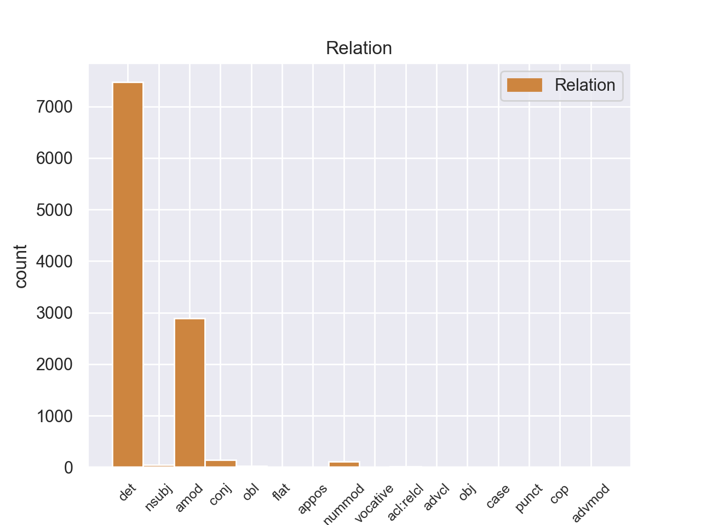
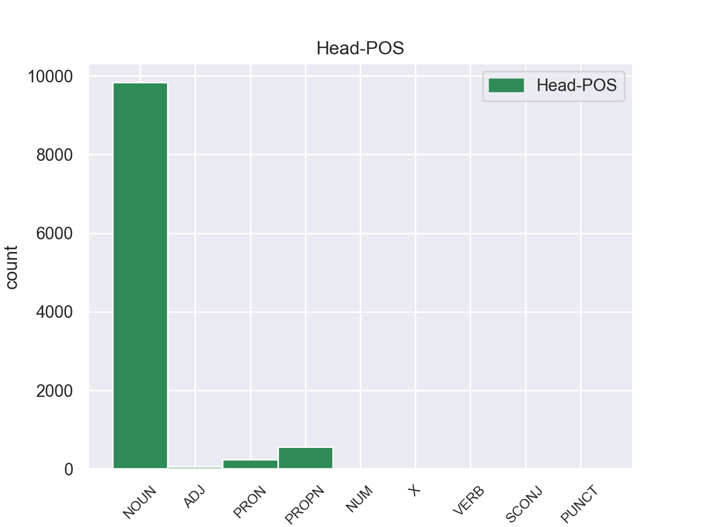
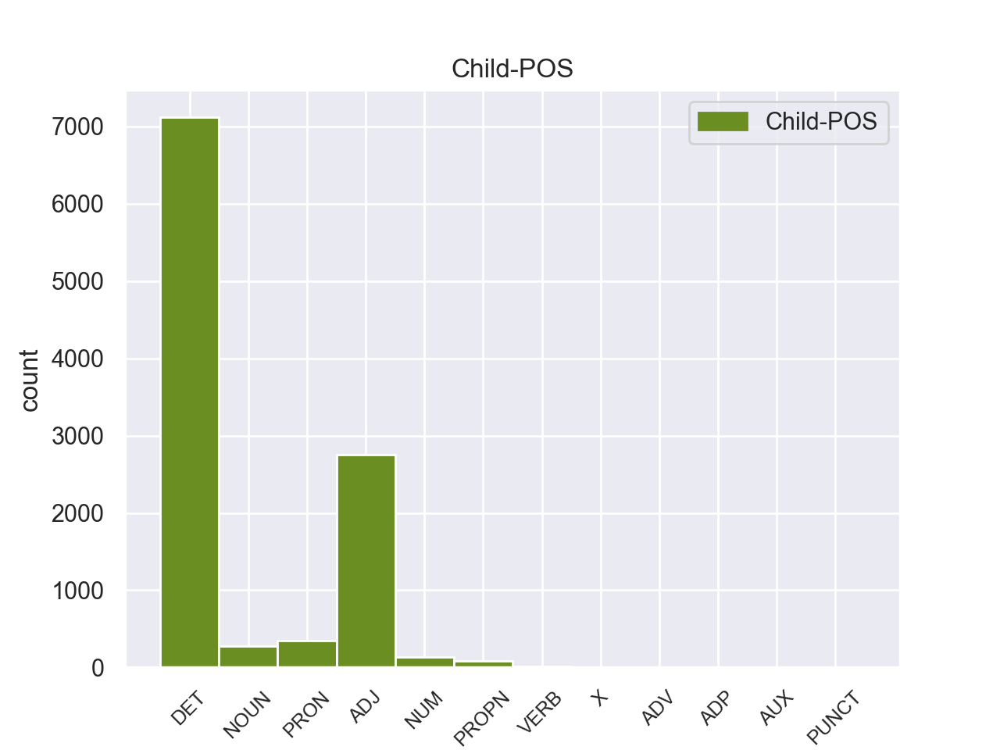

Distribution of features within this leaf



Agreement Rules sorted by frequency.
- When the dependent token is the determiner(det) of the head token, and the dependent token is DET.
1 Αυτό _ _ _ _ 0 _ _ _
2 μπορεί _ _ _ _ 0 _ _ _
3 να _ _ _ _ 0 _ _ _
4 μην _ _ _ _ 0 _ _ _
5 οδηγήσει _ _ _ _ 0 _ _ _
6 σ _ _ _ _ 0 _ _ _
7 τη _ _ _ _ 0 _ _ _
8 λήξη _ _ _ _ 0 _ _ _
9 του _ _ _ _ 0 _ _ _
10 εν _ _ _ _ 0 _ _ _
11 λόγω _ _ _ _ 0 _ _ _
12 ζητήματος _ _ _ _ 0 _ _ _
13 αλλά _ _ _ _ 0 _ _ _
14 , _ _ _ _ 0 _ _ _
15 σ _ _ _ _ 0 _ _ _
16 τη _ _ _ _ 0 _ _ _
17 μορφή _ _ _ _ 0 _ _ _
18 υπό _ _ _ _ 0 _ _ _
19 την _ _ _ _ 0 _ _ _
20 οποία _ _ _ _ 0 _ _ _
21 την _ _ _ _ 0 _ _ _
22 λάβαμε _ _ _ _ 0 _ _ _
23 , _ _ _ _ 0 _ _ _
24 αυτή _ _ _ _ 0 _ _ _
25 η _ _ _ _ 0 _ _ _
26 αίτηση _ _ _ _ 0 _ _ _
27 άρσης _ _ _ _ 0 _ _ _
28 της _ _ _ _ 0 _ _ _
29 ασυλίας _ _ _ _ 0 _ _ _
30 ήταν _ _ _ _ 0 _ _ _
31 , _ _ _ _ 0 _ _ _
32 κατά _ _ _ _ 0 _ _ _
33 την _ _ _ _ 0 _ _ _
34 άποψη _ _ _ _ 0 _ _ _
35 της _ _ _ _ 0 _ _ _
36 Επιτροπής _ _ _ _ 0 _ _ _
37 Νομικών _ _ _ _ 0 _ _ _
38 Θεμάτων _ _ _ _ 0 _ _ _
39 , _ _ _ _ 0 _ _ _
40 απαράδεκτη _ _ _ _ 0 _ _ _
41 , _ _ _ _ 0 _ _ _
42 άποψη _ _ _ _ 0 _ _ _
43 την _ _ _ _ 0 _ _ _
44 οποία _ _ _ _ 0 _ _ _
45 συνιστώ _ _ _ _ 0 _ _ _
46 σ _ _ _ _ 0 _ _ _
47 το ο DET _ Case=Acc|Gender=Neut|Number=Sing 48 det _ _
48 Σώμα σώμα NOUN _ Case=Acc|Gender=Neut|Number=Sing 0 _ _ _
49 να _ _ _ _ 0 _ _ _
50 υιοθετήσει _ _ _ _ 0 _ _ _
51 . _ _ _ _ 0 _ _ _
1 Ευελπιστώ _ _ _ _ 0 _ _ _
2 ότι _ _ _ _ 0 _ _ _
3 η _ _ _ _ 0 _ _ _
4 απόφαση _ _ _ _ 0 _ _ _
5 αυτή _ _ _ _ 0 _ _ _
6 , _ _ _ _ 0 _ _ _
7 συμπεριλαμβανομένης _ _ _ _ 0 _ _ _
8 και _ _ _ _ 0 _ _ _
9 της _ _ _ _ 0 _ _ _
10 αιτιολογικής αιτιολογικός ADJ _ Case=Gen|Gender=Fem|Number=Sing 11 amod _ _
11 έκθεσης έκθεσης NOUN _ Case=Acc|Gender=Fem|Number=Sing 0 _ _ _
12 που _ _ _ _ 0 _ _ _
13 την _ _ _ _ 0 _ _ _
14 συνοδεύει _ _ _ _ 0 _ _ _
15 , _ _ _ _ 0 _ _ _
16 θα _ _ _ _ 0 _ _ _
17 διαβιβαστεί _ _ _ _ 0 _ _ _
18 σ _ _ _ _ 0 _ _ _
19 τις _ _ _ _ 0 _ _ _
20 γαλλικές _ _ _ _ 0 _ _ _
21 αρχές _ _ _ _ 0 _ _ _
22 , _ _ _ _ 0 _ _ _
23 εφόσον _ _ _ _ 0 _ _ _
24 υπερψηφιστεί _ _ _ _ 0 _ _ _
25 από _ _ _ _ 0 _ _ _
26 το _ _ _ _ 0 _ _ _
27 Κοινοβούλιο _ _ _ _ 0 _ _ _
28 . _ _ _ _ 0 _ _ _
1 Αυτό _ _ _ _ 0 _ _ _
2 μπορεί _ _ _ _ 0 _ _ _
3 να _ _ _ _ 0 _ _ _
4 μην _ _ _ _ 0 _ _ _
5 οδηγήσει _ _ _ _ 0 _ _ _
6 σ _ _ _ _ 0 _ _ _
7 τη _ _ _ _ 0 _ _ _
8 λήξη _ _ _ _ 0 _ _ _
9 του _ _ _ _ 0 _ _ _
10 εν _ _ _ _ 0 _ _ _
11 λόγω _ _ _ _ 0 _ _ _
12 ζητήματος _ _ _ _ 0 _ _ _
13 αλλά _ _ _ _ 0 _ _ _
14 , _ _ _ _ 0 _ _ _
15 σ _ _ _ _ 0 _ _ _
16 τη _ _ _ _ 0 _ _ _
17 μορφή μορφή NOUN _ Case=Acc|Gender=Fem|Number=Sing 0 _ _ _
18 υπό _ _ _ _ 0 _ _ _
19 την _ _ _ _ 0 _ _ _
20 οποία _ _ _ _ 0 _ _ _
21 την ο PRON _ Case=Acc|Definite=Def|Gender=Fem|Number=Sing|PronType=Art 17 det _ _
22 λάβαμε _ _ _ _ 0 _ _ _
23 , _ _ _ _ 0 _ _ _
24 αυτή _ _ _ _ 0 _ _ _
25 η _ _ _ _ 0 _ _ _
26 αίτηση _ _ _ _ 0 _ _ _
27 άρσης _ _ _ _ 0 _ _ _
28 της _ _ _ _ 0 _ _ _
29 ασυλίας _ _ _ _ 0 _ _ _
30 ήταν _ _ _ _ 0 _ _ _
31 , _ _ _ _ 0 _ _ _
32 κατά _ _ _ _ 0 _ _ _
33 την _ _ _ _ 0 _ _ _
34 άποψη _ _ _ _ 0 _ _ _
35 της _ _ _ _ 0 _ _ _
36 Επιτροπής _ _ _ _ 0 _ _ _
37 Νομικών _ _ _ _ 0 _ _ _
38 Θεμάτων _ _ _ _ 0 _ _ _
39 , _ _ _ _ 0 _ _ _
40 απαράδεκτη _ _ _ _ 0 _ _ _
41 , _ _ _ _ 0 _ _ _
42 άποψη _ _ _ _ 0 _ _ _
43 την _ _ _ _ 0 _ _ _
44 οποία _ _ _ _ 0 _ _ _
45 συνιστώ _ _ _ _ 0 _ _ _
46 σ _ _ _ _ 0 _ _ _
47 το _ _ _ _ 0 _ _ _
48 Σώμα _ _ _ _ 0 _ _ _
49 να _ _ _ _ 0 _ _ _
50 υιοθετήσει _ _ _ _ 0 _ _ _
51 . _ _ _ _ 0 _ _ _
1 πρόκειται _ _ _ _ 0 _ _ _
2 για _ _ _ _ 0 _ _ _
3 αυτό _ _ _ _ 0 _ _ _
4 το _ _ _ _ 0 _ _ _
5 οποίο _ _ _ _ 0 _ _ _
6 αποκαλύφθηκε _ _ _ _ 0 _ _ _
7 κατά _ _ _ _ 0 _ _ _
8 τη _ _ _ _ 0 _ _ _
9 διάρκεια _ _ _ _ 0 _ _ _
10 αυτής _ _ _ _ 0 _ _ _
11 της _ _ _ _ 0 _ _ _
12 διαδικασίας _ _ _ _ 0 _ _ _
13 , _ _ _ _ 0 _ _ _
14 ότι _ _ _ _ 0 _ _ _
15 ο _ _ _ _ 0 _ _ _
16 Εισαγγελέας _ _ _ _ 0 _ _ _
17 κάποια _ _ _ _ 0 _ _ _
18 στιγμή _ _ _ _ 0 _ _ _
19 ζήτησε _ _ _ _ 0 _ _ _
20 από _ _ _ _ 0 _ _ _
21 την _ _ _ _ 0 _ _ _
22 Πρόεδρο _ _ _ _ 0 _ _ _
23 του _ _ _ _ 0 _ _ _
24 Σώματος _ _ _ _ 0 _ _ _
25 , _ _ _ _ 0 _ _ _
26 την _ _ _ _ 0 _ _ _
27 προκάτοχό _ _ _ _ 0 _ _ _
28 σας _ _ _ _ 0 _ _ _
29 , _ _ _ _ 0 _ _ _
30 λεπτομέρειες _ _ _ _ 0 _ _ _
31 για _ _ _ _ 0 _ _ _
32 την _ _ _ _ 0 _ _ _
33 ψήφο _ _ _ _ 0 _ _ _
34 που _ _ _ _ 0 _ _ _
35 έχουν _ _ _ _ 0 _ _ _
36 δώσει _ _ _ _ 0 _ _ _
37 οι _ _ _ _ 0 _ _ _
38 δύο δος NUM _ Case=Acc|Gender=Masc|Number=Plur 40 nummod _ _
39 συγκεκριμένοι _ _ _ _ 0 _ _ _
40 βουλευτές βουλευτές NOUN _ Case=Nom|Gender=Masc|Number=Plur 0 _ _ _
41 προκειμένου _ _ _ _ 0 _ _ _
42 να _ _ _ _ 0 _ _ _
43 διευκρινιστεί _ _ _ _ 0 _ _ _
44 περαιτέρω _ _ _ _ 0 _ _ _
45 η _ _ _ _ 0 _ _ _
46 πιθανότητα _ _ _ _ 0 _ _ _
47 να _ _ _ _ 0 _ _ _
48 είχαν _ _ _ _ 0 _ _ _
49 ασκήσει _ _ _ _ 0 _ _ _
50 αθέμιτη _ _ _ _ 0 _ _ _
51 επιρροή _ _ _ _ 0 _ _ _
52 . _ _ _ _ 0 _ _ _
1 Σύμφωνα _ _ _ _ 0 _ _ _
2 με _ _ _ _ 0 _ _ _
3 το _ _ _ _ 0 _ _ _
4 άρθρο _ _ _ _ 0 _ _ _
5 10 _ _ _ _ 0 _ _ _
6 του _ _ _ _ 0 _ _ _
7 Πρωτοκόλλου _ _ _ _ 0 _ _ _
8 του _ _ _ _ 0 _ _ _
9 1965 _ _ _ _ 0 _ _ _
10 , _ _ _ _ 0 _ _ _
11 δεν _ _ _ _ 0 _ _ _
12 υφίσταται _ _ _ _ 0 _ _ _
13 σχετική _ _ _ _ 0 _ _ _
14 ασυλία ασυλία NOUN _ Case=Acc|Gender=Fem|Number=Sing 0 _ _ _
15 για _ _ _ _ 0 _ _ _
16 βουλευτή _ _ _ _ 0 _ _ _
17 της _ _ _ _ 0 _ _ _
18 Γαλλικής _ _ _ _ 0 _ _ _
19 Εθνοσυνέλευσης _ _ _ _ 0 _ _ _
20 ή _ _ _ _ 0 _ _ _
21 , _ _ _ _ 0 _ _ _
22 κατά _ _ _ _ 0 _ _ _
23 συνέπεια συνέπεια NOUN _ Case=Acc|Gender=Fem|Number=Sing 14 amod _ _
24 , _ _ _ _ 0 _ _ _
25 για _ _ _ _ 0 _ _ _
26 γάλλο _ _ _ _ 0 _ _ _
27 βουλευτή _ _ _ _ 0 _ _ _
28 του _ _ _ _ 0 _ _ _
29 Ευρωπαϊκού _ _ _ _ 0 _ _ _
30 Κοινοβουλίου _ _ _ _ 0 _ _ _
31 σε _ _ _ _ 0 _ _ _
32 περίπτωση _ _ _ _ 0 _ _ _
33 δίωξης _ _ _ _ 0 _ _ _
34 για _ _ _ _ 0 _ _ _
35 κατηγορίες _ _ _ _ 0 _ _ _
36 αυτού _ _ _ _ 0 _ _ _
37 του _ _ _ _ 0 _ _ _
38 είδους _ _ _ _ 0 _ _ _
39 . _ _ _ _ 0 _ _ _
1 Με _ _ _ _ 0 _ _ _
2 αυτές _ _ _ _ 0 _ _ _
3 τις _ _ _ _ 0 _ _ _
4 κατηγορίες _ _ _ _ 0 _ _ _
5 , _ _ _ _ 0 _ _ _
6 από _ _ _ _ 0 _ _ _
7 τις _ _ _ _ 0 _ _ _
8 οποίες _ _ _ _ 0 _ _ _
9 η _ _ _ _ 0 _ _ _
10 πρώτη _ _ _ _ 0 _ _ _
11 αφορά _ _ _ _ 0 _ _ _
12 λαθρεμπόριο _ _ _ _ 0 _ _ _
13 όπλων _ _ _ _ 0 _ _ _
14 κλπ. _ _ _ _ 0 _ _ _
15 , _ _ _ _ 0 _ _ _
16 και _ _ _ _ 0 _ _ _
17 βαρύνει _ _ _ _ 0 _ _ _
18 τόσο _ _ _ _ 0 _ _ _
19 τον _ _ _ _ 0 _ _ _
20 κ. _ _ _ _ 0 _ _ _
21 Pasqua _ _ _ _ 0 _ _ _
22 όσο _ _ _ _ 0 _ _ _
23 και _ _ _ _ 0 _ _ _
24 τον _ _ _ _ 0 _ _ _
25 κ. _ _ _ _ 0 _ _ _
26 Marchiani _ _ _ _ 0 _ _ _
27 , _ _ _ _ 0 _ _ _
28 ενώ _ _ _ _ 0 _ _ _
29 η _ _ _ _ 0 _ _ _
30 δεύτερη _ _ _ _ 0 _ _ _
31 στρέφεται _ _ _ _ 0 _ _ _
32 μόνον _ _ _ _ 0 _ _ _
33 εναντίον _ _ _ _ 0 _ _ _
34 του _ _ _ _ 0 _ _ _
35 κ. _ _ _ _ 0 _ _ _
36 Pasqua _ _ _ _ 0 _ _ _
37 , _ _ _ _ 0 _ _ _
38 οι _ _ _ _ 0 _ _ _
39 ανακριτές _ _ _ _ 0 _ _ _
40 δικαστές _ _ _ _ 0 _ _ _
41 ζητούν _ _ _ _ 0 _ _ _
42 την _ _ _ _ 0 _ _ _
43 άρση _ _ _ _ 0 _ _ _
44 της _ _ _ _ 0 _ _ _
45 βουλευτικής _ _ _ _ 0 _ _ _
46 ασυλίας _ _ _ _ 0 _ _ _
47 των _ _ _ _ 0 _ _ _
48 εν _ _ _ _ 0 _ _ _
49 λόγω _ _ _ _ 0 _ _ _
50 δύο _ _ _ _ 0 _ _ _
51 κυρίων _ _ _ _ 0 _ _ _
52 , _ _ _ _ 0 _ _ _
53 προκειμένου _ _ _ _ 0 _ _ _
54 να _ _ _ _ 0 _ _ _
55 τους _ _ _ _ 0 _ _ _
56 επιβληθούν _ _ _ _ 0 _ _ _
57 ορισμένα _ _ _ _ 0 _ _ _
58 μέτρα _ _ _ _ 0 _ _ _
59 δικαστικής _ _ _ _ 0 _ _ _
60 επιτήρησης _ _ _ _ 0 _ _ _
61 : _ _ _ _ 0 _ _ _
62 να _ _ _ _ 0 _ _ _
63 τους _ _ _ _ 0 _ _ _
64 απαγορευθεί _ _ _ _ 0 _ _ _
65 η _ _ _ _ 0 _ _ _
66 επαφή _ _ _ _ 0 _ _ _
67 με _ _ _ _ 0 _ _ _
68 διάφορους _ _ _ _ 0 _ _ _
69 μάρτυρες μάρτυρο NOUN _ Case=Acc|Gender=Masc|Number=Plur 0 _ _ _
70 ή _ _ _ _ 0 _ _ _
71 συγκατηγορουμένους συγκατηγορουμένους NOUN _ Case=Acc|Gender=Masc|Number=Plur 69 conj _ _
72 σ _ _ _ _ 0 _ _ _
73 τις _ _ _ _ 0 _ _ _
74 υποθέσεις _ _ _ _ 0 _ _ _
75 αυτές _ _ _ _ 0 _ _ _
76 και _ _ _ _ 0 _ _ _
77 η _ _ _ _ 0 _ _ _
78 μετάβαση _ _ _ _ 0 _ _ _
79 σε _ _ _ _ 0 _ _ _
80 διάφορες _ _ _ _ 0 _ _ _
81 χώρες _ _ _ _ 0 _ _ _
82 , _ _ _ _ 0 _ _ _
83 καθώς _ _ _ _ 0 _ _ _
84 και _ _ _ _ 0 _ _ _
85 να _ _ _ _ 0 _ _ _
86 τους _ _ _ _ 0 _ _ _
87 επιβληθεί _ _ _ _ 0 _ _ _
88 ενδεχομένως _ _ _ _ 0 _ _ _
89 η _ _ _ _ 0 _ _ _
90 καταβολή _ _ _ _ 0 _ _ _
91 εγγύησης _ _ _ _ 0 _ _ _
92 . _ _ _ _ 0 _ _ _
1 Η _ _ _ _ 0 _ _ _
2 Γερμανία γερμανία PROPN _ Case=Nom|Gender=Fem|Number=Sing 0 _ _ _
3 και _ _ _ _ 0 _ _ _
4 η _ _ _ _ 0 _ _ _
5 Αυστρία Αυστρία PROPN _ Case=Nom|Gender=Fem|Number=Sing 2 conj _ _
6 , _ _ _ _ 0 _ _ _
7 επειδή _ _ _ _ 0 _ _ _
8 δεν _ _ _ _ 0 _ _ _
9 ήθελαν _ _ _ _ 0 _ _ _
10 να _ _ _ _ 0 _ _ _
11 φανεί _ _ _ _ 0 _ _ _
12 ότι _ _ _ _ 0 _ _ _
13 αντιτίθενται _ _ _ _ 0 _ _ _
14 σ _ _ _ _ 0 _ _ _
15 τις _ _ _ _ 0 _ _ _
16 τουρκικές _ _ _ _ 0 _ _ _
17 απαιτήσεις _ _ _ _ 0 _ _ _
18 , _ _ _ _ 0 _ _ _
19 αποχώρησαν _ _ _ _ 0 _ _ _
20 από _ _ _ _ 0 _ _ _
21 τον _ _ _ _ 0 _ _ _
22 συνασπισμό _ _ _ _ 0 _ _ _
23 των _ _ _ _ 0 _ _ _
24 ευρωπαϊκών _ _ _ _ 0 _ _ _
25 δυνάμεων _ _ _ _ 0 _ _ _
26 , _ _ _ _ 0 _ _ _
27 ο _ _ _ _ 0 _ _ _
28 οποίος _ _ _ _ 0 _ _ _
29 έγινε _ _ _ _ 0 _ _ _
30 πλέον _ _ _ _ 0 _ _ _
31 τετραμελής _ _ _ _ 0 _ _ _
32 . _ _ _ _ 0 _ _ _
1 Το _ _ _ _ 0 _ _ _
2 άρθρο _ _ _ _ 0 _ _ _
3 9 _ _ _ _ 0 _ _ _
4 του _ _ _ _ 0 _ _ _
5 Πρωτοκόλλου _ _ _ _ 0 _ _ _
6 , _ _ _ _ 0 _ _ _
7 όπως _ _ _ _ 0 _ _ _
8 επεσήμανε _ _ _ _ 0 _ _ _
9 με _ _ _ _ 0 _ _ _
10 αυστηρότητα _ _ _ _ 0 _ _ _
11 η _ _ _ _ 0 _ _ _
12 Πρόεδρος _ _ _ _ 0 _ _ _
13 Fontaine _ _ _ _ 0 _ _ _
14 σ _ _ _ _ 0 _ _ _
15 τον _ _ _ _ 0 _ _ _
16 Εισαγγελέα _ _ _ _ 0 _ _ _
17 , _ _ _ _ 0 _ _ _
18 μας _ _ _ _ 0 _ _ _
19 απαλλάσσει _ _ _ _ 0 _ _ _
20 τελείως _ _ _ _ 0 _ _ _
21 από _ _ _ _ 0 _ _ _
22 οποιαδήποτε οποιαδήποτε ADJ _ Case=Acc|Gender=Fem|Number=Sing 24 det _ _
23 νομική _ _ _ _ 0 _ _ _
24 διαδικασία διαδικασία NOUN _ Case=Acc|Gender=Fem|Number=Sing 0 _ _ _
25 σε _ _ _ _ 0 _ _ _
26 σχέση _ _ _ _ 0 _ _ _
27 με _ _ _ _ 0 _ _ _
28 την _ _ _ _ 0 _ _ _
29 έκφραση _ _ _ _ 0 _ _ _
30 γνώμης _ _ _ _ 0 _ _ _
31 ή _ _ _ _ 0 _ _ _
32 ψήφου _ _ _ _ 0 _ _ _
33 κατά _ _ _ _ 0 _ _ _
34 την _ _ _ _ 0 _ _ _
35 άσκηση _ _ _ _ 0 _ _ _
36 των _ _ _ _ 0 _ _ _
37 καθηκόντων _ _ _ _ 0 _ _ _
38 μας _ _ _ _ 0 _ _ _
39 ως _ _ _ _ 0 _ _ _
40 μέλη _ _ _ _ 0 _ _ _
41 αυτού _ _ _ _ 0 _ _ _
42 του _ _ _ _ 0 _ _ _
43 Κοινοβουλίου _ _ _ _ 0 _ _ _
44 . _ _ _ _ 0 _ _ _
1 Εξαιτίας _ _ _ _ 0 _ _ _
2 του _ _ _ _ 0 _ _ _
3 , _ _ _ _ 0 _ _ _
4 όπως _ _ _ _ 0 _ _ _
5 έχει _ _ _ _ 0 _ _ _
6 οριστεί _ _ _ _ 0 _ _ _
7 , _ _ _ _ 0 _ _ _
8 κινεζικού _ _ _ _ 0 _ _ _
9 απαρτχάιντ _ _ _ _ 0 _ _ _
10 , _ _ _ _ 0 _ _ _
11 οι _ _ _ _ 0 _ _ _
12 Θιβετιανοί _ _ _ _ 0 _ _ _
13 έχουν _ _ _ _ 0 _ _ _
14 σήμερα _ _ _ _ 0 _ _ _
15 χαμηλότερο _ _ _ _ 0 _ _ _
16 προσδόκιμο _ _ _ _ 0 _ _ _
17 ζωής _ _ _ _ 0 _ _ _
18 , _ _ _ _ 0 _ _ _
19 ποσοστό _ _ _ _ 0 _ _ _
20 αλφαβητισμού _ _ _ _ 0 _ _ _
21 , _ _ _ _ 0 _ _ _
22 και _ _ _ _ 0 _ _ _
23 κατά _ _ _ _ 0 _ _ _
24 κεφαλή _ _ _ _ 0 _ _ _
25 εισόδημα _ _ _ _ 0 _ _ _
26 από _ _ _ _ 0 _ _ _
27 τους _ _ _ _ 0 _ _ _
28 Κινέζους κινέζοός PROPN _ Case=Nom|Gender=Masc|Number=Plur 29 amod _ _
29 αποίκους αποίκους NOUN _ Case=Acc|Gender=Masc|Number=Plur 0 _ _ _
30 του _ _ _ _ 0 _ _ _
31 Θιβέτ _ _ _ _ 0 _ _ _
32 . _ _ _ _ 0 _ _ _
1 Η _ _ _ _ 0 _ _ _
2 Μπενφίκα Μπενφίκα NOUN _ Case=Nom|Gender=Fem|Number=Sing 5 nsubj _ _
3 ήταν _ _ _ _ 0 _ _ _
4 πιο _ _ _ _ 0 _ _ _
5 επιθετική επιθετική ADJ _ Case=Nom|Gender=Fem|Number=Sing 0 _ _ _
6 και _ _ _ _ 0 _ _ _
7 καλύτερη _ _ _ _ 0 _ _ _
8 σ _ _ _ _ 0 _ _ _
9 το _ _ _ _ 0 _ _ _
10 πρώτο _ _ _ _ 0 _ _ _
11 ημίχρονο _ _ _ _ 0 _ _ _
12 , _ _ _ _ 0 _ _ _
13 με _ _ _ _ 0 _ _ _
14 αποτέλεσμα _ _ _ _ 0 _ _ _
15 να _ _ _ _ 0 _ _ _
16 ανοίξει _ _ _ _ 0 _ _ _
17 το _ _ _ _ 0 _ _ _
18 σκορ _ _ _ _ 0 _ _ _
19 σ _ _ _ _ 0 _ _ _
20 το _ _ _ _ 0 _ _ _
21 πρώτο _ _ _ _ 0 _ _ _
22 λεπτό _ _ _ _ 0 _ _ _
23 των _ _ _ _ 0 _ _ _
24 καθυστερήσεων _ _ _ _ 0 _ _ _
25 , _ _ _ _ 0 _ _ _
26 χάρη _ _ _ _ 0 _ _ _
27 σ _ _ _ _ 0 _ _ _
28 τον _ _ _ _ 0 _ _ _
29 Μάξι _ _ _ _ 0 _ _ _
30 Περέιρα _ _ _ _ 0 _ _ _
31 . _ _ _ _ 0 _ _ _
1 Σε _ _ _ _ 0 _ _ _
2 μία _ _ _ _ 0 _ _ _
3 συλλογή _ _ _ _ 0 _ _ _
4 ομιλιών _ _ _ _ 0 _ _ _
5 του _ _ _ _ 0 _ _ _
6 , _ _ _ _ 0 _ _ _
7 που _ _ _ _ 0 _ _ _
8 εκδόθηκε _ _ _ _ 0 _ _ _
9 σ _ _ _ _ 0 _ _ _
10 την _ _ _ _ 0 _ _ _
11 Ινδία _ _ _ _ 0 _ _ _
12 το _ _ _ _ 0 _ _ _
13 1998 _ _ _ _ 0 _ _ _
14 , _ _ _ _ 0 _ _ _
15 ο _ _ _ _ 0 _ _ _
16 Δαλάι _ _ _ _ 0 _ _ _
17 Λάμα _ _ _ _ 0 _ _ _
18 έκανε _ _ _ _ 0 _ _ _
19 ξανά _ _ _ _ 0 _ _ _
20 λόγο λόγο NOUN _ Case=Acc|Gender=Fem|Number=Sing 0 _ _ _
21 για _ _ _ _ 0 _ _ _
22 " _ _ _ _ 0 _ _ _
23 κινεζικό _ _ _ _ 0 _ _ _
24 απαρτχάιντ _ _ _ _ 0 _ _ _
25 " _ _ _ _ 0 _ _ _
26 , _ _ _ _ 0 _ _ _
27 μέσω _ _ _ _ 0 _ _ _
28 της _ _ _ _ 0 _ _ _
29 άρνησης άρνησης NOUN _ Case=Acc|Gender=Fem|Number=Sing 20 obl _ _
30 ίσων _ _ _ _ 0 _ _ _
31 κοινωνικών _ _ _ _ 0 _ _ _
32 και _ _ _ _ 0 _ _ _
33 οικονομικών _ _ _ _ 0 _ _ _
34 δικαιωμάτων _ _ _ _ 0 _ _ _
35 για _ _ _ _ 0 _ _ _
36 τους _ _ _ _ 0 _ _ _
37 Θιβετιανούς _ _ _ _ 0 _ _ _
38 . _ _ _ _ 0 _ _ _
1 Δύο δύο NUM _ Case=Nom|Gender=Masc|Number=Plur 2 amod _ _
2 επιβάτες επιβάτες NOUN _ Case=Nom|Gender=Masc|Number=Plur 0 _ _ _
3 τραυματίσθηκαν _ _ _ _ 0 _ _ _
4 ελαφρά _ _ _ _ 0 _ _ _
5 κατά _ _ _ _ 0 _ _ _
6 την _ _ _ _ 0 _ _ _
7 επιχείρηση _ _ _ _ 0 _ _ _
8 εγκατάλειψης _ _ _ _ 0 _ _ _
9 του _ _ _ _ 0 _ _ _
10 αεροσκάφους _ _ _ _ 0 _ _ _
11 . _ _ _ _ 0 _ _ _
1 Σ _ _ _ _ 0 _ _ _
2 το _ _ _ _ 0 _ _ _
3 δεύτερο _ _ _ _ 0 _ _ _
4 , _ _ _ _ 0 _ _ _
5 οι _ _ _ _ 0 _ _ _
6 Ρώσοι _ _ _ _ 0 _ _ _
7 προσπάθησαν _ _ _ _ 0 _ _ _
8 να _ _ _ _ 0 _ _ _
9 ισοφαρίσουν _ _ _ _ 0 _ _ _
10 , _ _ _ _ 0 _ _ _
11 αλλά _ _ _ _ 0 _ _ _
12 ένα ένας NUM _ Case=Acc|Definite=Ind|Gender=Neut|Number=Sing|PronType=Art 13 det _ _
13 λεπτό λεπτό NOUN _ Case=Acc|Gender=Neut|Number=Sing 0 _ _ _
14 πριν _ _ _ _ 0 _ _ _
15 τη _ _ _ _ 0 _ _ _
16 λήξη _ _ _ _ 0 _ _ _
17 ο _ _ _ _ 0 _ _ _
18 Ολιβέιρα _ _ _ _ 0 _ _ _
19 σκόραρε _ _ _ _ 0 _ _ _
20 το _ _ _ _ 0 _ _ _
21 δεύτερο _ _ _ _ 0 _ _ _
22 γκολ _ _ _ _ 0 _ _ _
23 των _ _ _ _ 0 _ _ _
24 Πορτογάλων _ _ _ _ 0 _ _ _
25 . _ _ _ _ 0 _ _ _
1 Επιθυμώ _ _ _ _ 0 _ _ _
2 , _ _ _ _ 0 _ _ _
3 καταρχάς _ _ _ _ 0 _ _ _
4 , _ _ _ _ 0 _ _ _
5 να _ _ _ _ 0 _ _ _
6 δηλώσω _ _ _ _ 0 _ _ _
7 ότι _ _ _ _ 0 _ _ _
8 οι _ _ _ _ 0 _ _ _
9 κατηγορίες _ _ _ _ 0 _ _ _
10 οι _ _ _ _ 0 _ _ _
11 οποίες _ _ _ _ 0 _ _ _
12 βαρύνουν _ _ _ _ 0 _ _ _
13 τους _ _ _ _ 0 _ _ _
14 εν _ _ _ _ 0 _ _ _
15 λόγω λόγω PRON _ Case=Acc|Gender=Masc|Number=Plur 16 amod _ _
16 βουλευτές βουλευτές NOUN _ Case=Acc|Gender=Masc|Number=Plur 0 _ _ _
17 είναι _ _ _ _ 0 _ _ _
18 σοβαρές _ _ _ _ 0 _ _ _
19 . _ _ _ _ 0 _ _ _
1 Το _ _ _ _ 0 _ _ _
2 πάρκο _ _ _ _ 0 _ _ _
3 απλώνεται _ _ _ _ 0 _ _ _
4 σε _ _ _ _ 0 _ _ _
5 θαλάσσια _ _ _ _ 0 _ _ _
6 περιοχή _ _ _ _ 0 _ _ _
7 2.200 _ _ _ _ 0 _ _ _
8 τετραγωνικών _ _ _ _ 0 _ _ _
9 χιλιομέτρων _ _ _ _ 0 _ _ _
10 βόρεια _ _ _ _ 0 _ _ _
11 της _ _ _ _ 0 _ _ _
12 Αλοννήσου _ _ _ _ 0 _ _ _
13 και _ _ _ _ 0 _ _ _
14 περιλαμβάνει _ _ _ _ 0 _ _ _
15 - _ _ _ _ 0 _ _ _
16 εκτός _ _ _ _ 0 _ _ _
17 από _ _ _ _ 0 _ _ _
18 την _ _ _ _ 0 _ _ _
19 Αλόννησο _ _ _ _ 0 _ _ _
20 - _ _ _ _ 0 _ _ _
21 τα _ _ _ _ 0 _ _ _
22 ακατοίκητα _ _ _ _ 0 _ _ _
23 νησιά _ _ _ _ 0 _ _ _
24 και _ _ _ _ 0 _ _ _
25 τις _ _ _ _ 0 _ _ _
26 βραχονησίδες _ _ _ _ 0 _ _ _
27 Περιστέρα _ _ _ _ 0 _ _ _
28 , _ _ _ _ 0 _ _ _
29 Δύο _ _ _ _ 0 _ _ _
30 Αδελφοί _ _ _ _ 0 _ _ _
31 , _ _ _ _ 0 _ _ _
32 Κυρά Κυρά NOUN _ Case=Gen|Gender=Fem|Number=Sing 0 _ _ _
33 Παναγιά Παναγιά PROPN _ Case=Gen|Gender=Fem|Number=Sing 32 flat _ _
34 , _ _ _ _ 0 _ _ _
35 Παππούς _ _ _ _ 0 _ _ _
36 , _ _ _ _ 0 _ _ _
37 Σκάντουρα _ _ _ _ 0 _ _ _
38 , _ _ _ _ 0 _ _ _
39 Γιούρα _ _ _ _ 0 _ _ _
40 , _ _ _ _ 0 _ _ _
41 Ψαθούρα _ _ _ _ 0 _ _ _
42 , _ _ _ _ 0 _ _ _
43 Πιπέρι _ _ _ _ 0 _ _ _
44 . _ _ _ _ 0 _ _ _
1 Ο _ _ _ _ 0 _ _ _
2 λόγος _ _ _ _ 0 _ _ _
3 γίνεται _ _ _ _ 0 _ _ _
4 για _ _ _ _ 0 _ _ _
5 τον _ _ _ _ 0 _ _ _
6 Χάουμε _ _ _ _ 0 _ _ _
7 Μάτας _ _ _ _ 0 _ _ _
8 , _ _ _ _ 0 _ _ _
9 ο _ _ _ _ 0 _ _ _
10 οποίος οποίος PRON _ Case=Nom|Gender=Masc|Number=Sing|Person=3|PronType=Rel 12 nsubj _ _
11 ήταν _ _ _ _ 0 _ _ _
12 Υπουργός υπουργός NOUN _ Case=Nom|Gender=Masc|Number=Sing 0 _ _ _
13 Περιβάλλοντος _ _ _ _ 0 _ _ _
14 τα _ _ _ _ 0 _ _ _
15 έτη _ _ _ _ 0 _ _ _
16 2000-2003 _ _ _ _ 0 _ _ _
17 και _ _ _ _ 0 _ _ _
18 Περιφερειακός _ _ _ _ 0 _ _ _
19 Πρωθυπουργός _ _ _ _ 0 _ _ _
20 των _ _ _ _ 0 _ _ _
21 Βαλεαρίδων _ _ _ _ 0 _ _ _
22 Νήσων _ _ _ _ 0 _ _ _
23 κατά _ _ _ _ 0 _ _ _
24 την _ _ _ _ 0 _ _ _
25 περίοδο _ _ _ _ 0 _ _ _
26 2003-2007 _ _ _ _ 0 _ _ _
27 . _ _ _ _ 0 _ _ _
1 Ο _ _ _ _ 0 _ _ _
2 Πρόεδρος _ _ _ _ 0 _ _ _
3 της _ _ _ _ 0 _ _ _
4 Ευρωπαϊκής _ _ _ _ 0 _ _ _
5 Επιτροπής _ _ _ _ 0 _ _ _
6 , _ _ _ _ 0 _ _ _
7 Μανουέλ _ _ _ _ 0 _ _ _
8 Μπαρόζο _ _ _ _ 0 _ _ _
9 , _ _ _ _ 0 _ _ _
10 και _ _ _ _ 0 _ _ _
11 ο _ _ _ _ 0 _ _ _
12 Επικεφαλής _ _ _ _ 0 _ _ _
13 των _ _ _ _ 0 _ _ _
14 Φιλελεύθερων _ _ _ _ 0 _ _ _
15 του _ _ _ _ 0 _ _ _
16 Ευρωκοινοβουλίου _ _ _ _ 0 _ _ _
17 και _ _ _ _ 0 _ _ _
18 πρώην πρώην DET _ Case=Nom|Definite=Def|Gender=Masc|Number=Sing|PronType=Art 19 amod _ _
19 Πρωθυπουργός πρωθυπουργός NOUN _ Case=Gen|Gender=Masc|Number=Sing 0 _ _ _
20 του _ _ _ _ 0 _ _ _
21 Βελγίου _ _ _ _ 0 _ _ _
22 , _ _ _ _ 0 _ _ _
23 Γκι _ _ _ _ 0 _ _ _
24 Φέρχοφστατ _ _ _ _ 0 _ _ _
25 , _ _ _ _ 0 _ _ _
26 εξέφρασαν _ _ _ _ 0 _ _ _
27 τα _ _ _ _ 0 _ _ _
28 συλληπήτηρια _ _ _ _ 0 _ _ _
29 τους _ _ _ _ 0 _ _ _
30 σ _ _ _ _ 0 _ _ _
31 τις _ _ _ _ 0 _ _ _
32 οικογένειες _ _ _ _ 0 _ _ _
33 των _ _ _ _ 0 _ _ _
34 θυμάτων _ _ _ _ 0 _ _ _
35 . _ _ _ _ 0 _ _ _
1 Η _ _ _ _ 0 _ _ _
2 Ομάδα _ _ _ _ 0 _ _ _
3 μου _ _ _ _ 0 _ _ _
4 πιστεύει _ _ _ _ 0 _ _ _
5 πως _ _ _ _ 0 _ _ _
6 η _ _ _ _ 0 _ _ _
7 σφαιρική _ _ _ _ 0 _ _ _
8 προσέγγιση προσέγγιση NOUN _ Case=Acc|Gender=Fem|Number=Sing 0 _ _ _
9 είναι _ _ _ _ 0 _ _ _
10 απαραίτητη απαραίτητη VERB _ Case=Acc|Gender=Fem|Number=Sing 8 amod _ _
11 , _ _ _ _ 0 _ _ _
12 και _ _ _ _ 0 _ _ _
13 για _ _ _ _ 0 _ _ _
14 τον _ _ _ _ 0 _ _ _
15 λόγο _ _ _ _ 0 _ _ _
16 αυτό _ _ _ _ 0 _ _ _
17 αναμένουμε _ _ _ _ 0 _ _ _
18 με _ _ _ _ 0 _ _ _
19 μεγάλη _ _ _ _ 0 _ _ _
20 ανυπομονησία _ _ _ _ 0 _ _ _
21 τη _ _ _ _ 0 _ _ _
22 Λευκή _ _ _ _ 0 _ _ _
23 Βίβλο _ _ _ _ 0 _ _ _
24 της _ _ _ _ 0 _ _ _
25 Επιτροπής _ _ _ _ 0 _ _ _
26 σχετικά _ _ _ _ 0 _ _ _
27 με _ _ _ _ 0 _ _ _
28 αυτό _ _ _ _ 0 _ _ _
29 το _ _ _ _ 0 _ _ _
30 ζήτημα _ _ _ _ 0 _ _ _
31 . _ _ _ _ 0 _ _ _
1 Αλλά _ _ _ _ 0 _ _ _
2 εδώ _ _ _ _ 0 _ _ _
3 η _ _ _ _ 0 _ _ _
4 ειδική _ _ _ _ 0 _ _ _
5 φύση _ _ _ _ 0 _ _ _
6 της _ _ _ _ 0 _ _ _
7 κατάστασης _ _ _ _ 0 _ _ _
8 μας _ _ _ _ 0 _ _ _
9 οδήγησε _ _ _ _ 0 _ _ _
10 να _ _ _ _ 0 _ _ _
11 πιστεύουμε _ _ _ _ 0 _ _ _
12 σθεναρά _ _ _ _ 0 _ _ _
13 ότι _ _ _ _ 0 _ _ _
14 ένας _ _ _ _ 0 _ _ _
15 κανόνας κανόνας NOUN _ Case=Nom|Gender=Fem|Number=Plur 0 _ _ _
16 ειδικά _ _ _ _ 0 _ _ _
17 για _ _ _ _ 0 _ _ _
18 τον _ _ _ _ 0 _ _ _
19 τομέα _ _ _ _ 0 _ _ _
20 θα _ _ _ _ 0 _ _ _
21 ήταν _ _ _ _ 0 _ _ _
22 πιο _ _ _ _ 0 _ _ _
23 κατάλληλος κατάλληλος NOUN _ Case=Acc|Gender=Fem|Number=Sing 15 acl:relcl _ _
24 . _ _ _ _ 0 _ _ _
1 Συνειδητοποιώ _ _ _ _ 0 _ _ _
2 με _ _ _ _ 0 _ _ _
3 ανακούφιση _ _ _ _ 0 _ _ _
4 ότι _ _ _ _ 0 _ _ _
5 δεν _ _ _ _ 0 _ _ _
6 είμαι _ _ _ _ 0 _ _ _
7 ο _ _ _ _ 0 _ _ _
8 αρμόδιος _ _ _ _ 0 _ _ _
9 Επίτροπος _ _ _ _ 0 _ _ _
10 ούτε _ _ _ _ 0 _ _ _
11 για _ _ _ _ 0 _ _ _
12 τη _ _ _ _ 0 _ _ _
13 φορολογία _ _ _ _ 0 _ _ _
14 ούτε _ _ _ _ 0 _ _ _
15 για _ _ _ _ 0 _ _ _
16 τη _ _ _ _ 0 _ _ _
17 νομισματική _ _ _ _ 0 _ _ _
18 ένωση _ _ _ _ 0 _ _ _
19 , _ _ _ _ 0 _ _ _
20 αλλά _ _ _ _ 0 _ _ _
21 απλά _ _ _ _ 0 _ _ _
22 ο _ _ _ _ 0 _ _ _
23 Επίτροπος _ _ _ _ 0 _ _ _
24 για _ _ _ _ 0 _ _ _
25 την _ _ _ _ 0 _ _ _
26 ταπεινή _ _ _ _ 0 _ _ _
27 πολιτική _ _ _ _ 0 _ _ _
28 ανταγωνισμού _ _ _ _ 0 _ _ _
29 η _ _ _ _ 0 _ _ _
30 οποία _ _ _ _ 0 _ _ _
31 , _ _ _ _ 0 _ _ _
32 παρόλα _ _ _ _ 0 _ _ _
33 ταύτα _ _ _ _ 0 _ _ _
34 , _ _ _ _ 0 _ _ _
35 έχει _ _ _ _ 0 _ _ _
36 να _ _ _ _ 0 _ _ _
37 διαδραματίσει _ _ _ _ 0 _ _ _
38 ένα _ _ _ _ 0 _ _ _
39 ρόλο _ _ _ _ 0 _ _ _
40 και _ _ _ _ 0 _ _ _
41 προσπαθεί _ _ _ _ 0 _ _ _
42 να _ _ _ _ 0 _ _ _
43 τον _ _ _ _ 0 _ _ _
44 διαδραματίσει _ _ _ _ 0 _ _ _
45 δραστήρια _ _ _ _ 0 _ _ _
46 - _ _ _ _ 0 _ _ _
47 με _ _ _ _ 0 _ _ _
48 την _ _ _ _ 0 _ _ _
49 υποστήριξη υποστήριξη NOUN _ Case=Acc|Gender=Fem|Number=Sing 0 _ _ _
50 του _ _ _ _ 0 _ _ _
51 Κοινοβουλίου _ _ _ _ 0 _ _ _
52 , _ _ _ _ 0 _ _ _
53 η _ _ _ _ 0 _ _ _
54 οποία _ _ _ _ 0 _ _ _
55 είναι _ _ _ _ 0 _ _ _
56 εμφανής εμφανής VERB _ Case=Acc|Gender=Fem|Number=Sing 49 acl:relcl _ _
57 για _ _ _ _ 0 _ _ _
58 μία _ _ _ _ 0 _ _ _
59 ακόμη _ _ _ _ 0 _ _ _
60 φορά _ _ _ _ 0 _ _ _
61 σήμερα _ _ _ _ 0 _ _ _
62 . _ _ _ _ 0 _ _ _
1 Αξιότιμε _ _ _ _ 0 _ _ _
2 κύριε _ _ _ _ 0 _ _ _
3 Πρόεδρε _ _ _ _ 0 _ _ _
4 , _ _ _ _ 0 _ _ _
5 κυρία κυρία NOUN NOUN Case=Voc|Gender=Fem|Number=Sing 6 vocative _ _
6 Επίτροπε επίτροπος NOUN NOUN Case=Voc|Gender=Fem|Number=Sing 0 _ _ _
7 , _ _ _ _ 0 _ _ _
8 αξιότιμοι _ _ _ _ 0 _ _ _
9 συνάδελφοι _ _ _ _ 0 _ _ _
10 , _ _ _ _ 0 _ _ _
11 η _ _ _ _ 0 _ _ _
12 ελευθέρωση _ _ _ _ 0 _ _ _
13 των _ _ _ _ 0 _ _ _
14 οδικών _ _ _ _ 0 _ _ _
15 μεταφορών _ _ _ _ 0 _ _ _
16 αναμφίβολα _ _ _ _ 0 _ _ _
17 οδήγησε _ _ _ _ 0 _ _ _
18 σ _ _ _ _ 0 _ _ _
19 το _ _ _ _ 0 _ _ _
20 να _ _ _ _ 0 _ _ _
21 έχουμε _ _ _ _ 0 _ _ _
22 σ _ _ _ _ 0 _ _ _
23 την _ _ _ _ 0 _ _ _
24 Ευρώπη _ _ _ _ 0 _ _ _
25 καλύτερη _ _ _ _ 0 _ _ _
26 προσφορά _ _ _ _ 0 _ _ _
27 και _ _ _ _ 0 _ _ _
28 καλύτερες _ _ _ _ 0 _ _ _
29 τιμές _ _ _ _ 0 _ _ _
30 . _ _ _ _ 0 _ _ _
1 Τα _ _ _ _ 0 _ _ _
2 ευρωπαϊκά _ _ _ _ 0 _ _ _
3 πολεμικά _ _ _ _ 0 _ _ _
4 χτύπησαν _ _ _ _ 0 _ _ _
5 με _ _ _ _ 0 _ _ _
6 τα _ _ _ _ 0 _ _ _
7 πυροβόλα _ _ _ _ 0 _ _ _
8 τους _ _ _ _ 0 _ _ _
9 , _ _ _ _ 0 _ _ _
10 τους _ _ _ _ 0 _ _ _
11 επαναστάτες _ _ _ _ 0 _ _ _
12 σ _ _ _ _ 0 _ _ _
13 το _ _ _ _ 0 _ _ _
14 Ακρωτήρι _ _ _ _ 0 _ _ _
15 , _ _ _ _ 0 _ _ _
16 ρίχνοντας _ _ _ _ 0 _ _ _
17 τη _ _ _ _ 0 _ _ _
18 σημαία _ _ _ _ 0 _ _ _
19 που _ _ _ _ 0 _ _ _
20 υψώθηκε _ _ _ _ 0 _ _ _
21 αμέσως _ _ _ _ 0 _ _ _
22 πάλι _ _ _ _ 0 _ _ _
23 υπό _ _ _ _ 0 _ _ _
24 τις _ _ _ _ 0 _ _ _
25 θυελλώδεις _ _ _ _ 0 _ _ _
26 ζητωκραυγές _ _ _ _ 0 _ _ _
27 των _ _ _ _ 0 _ _ _
28 πληρωμάτων _ _ _ _ 0 _ _ _
29 των _ _ _ _ 0 _ _ _
30 ελληνικών _ _ _ _ 0 _ _ _
31 πολεμικών _ _ _ _ 0 _ _ _
32 που _ _ _ _ 0 _ _ _
33 ναυλοχούσαν _ _ _ _ 0 _ _ _
34 στ' _ _ _ _ 0 _ _ _
35 ανοιχτά _ _ _ _ 0 _ _ _
36 αλλά _ _ _ _ 0 _ _ _
37 δεν _ _ _ _ 0 _ _ _
38 μπορούσαν _ _ _ _ 0 _ _ _
39 να _ _ _ _ 0 _ _ _
40 επέμβουν _ _ _ _ 0 _ _ _
41 ενώ _ _ _ _ 0 _ _ _
42 σ _ _ _ _ 0 _ _ _
43 το _ _ _ _ 0 _ _ _
44 θωρηκτό _ _ _ _ 0 _ _ _
45 " " NOUN _ Case=Acc|Gender=Neut|Number=Sing 46 punct _ _
46 Ύδρα ύδρα NOUN _ Case=Acc|Gender=Neut|Number=Sing 0 _ _ _
47 " _ _ _ _ 0 _ _ _
48 γινόταν _ _ _ _ 0 _ _ _
49 ανάκρουση _ _ _ _ 0 _ _ _
50 του _ _ _ _ 0 _ _ _
51 Εθνικού _ _ _ _ 0 _ _ _
52 μας _ _ _ _ 0 _ _ _
53 Ύμνου _ _ _ _ 0 _ _ _
54 . _ _ _ _ 0 _ _ _
1 Ό,τι _ _ _ _ 0 _ _ _
2 και _ _ _ _ 0 _ _ _
3 να _ _ _ _ 0 _ _ _
4 σήμαινε _ _ _ _ 0 _ _ _
5 το _ _ _ _ 0 _ _ _
6 όνομα _ _ _ _ 0 _ _ _
7 Μακεδονία _ _ _ _ 0 _ _ _
8 σ _ _ _ _ 0 _ _ _
9 την _ _ _ _ 0 _ _ _
10 αρχαιότητα _ _ _ _ 0 _ _ _
11 , _ _ _ _ 0 _ _ _
12 σ _ _ _ _ 0 _ _ _
13 τα _ _ _ _ 0 _ _ _
14 τέλη _ _ _ _ 0 _ _ _
15 του _ _ _ _ 0 _ _ _
16 19ου _ _ _ _ 0 _ _ _
17 αιώνα _ _ _ _ 0 _ _ _
18 δήλωνε _ _ _ _ 0 _ _ _
19 τη _ _ _ _ 0 _ _ _
20 περιοχή _ _ _ _ 0 _ _ _
21 που _ _ _ _ 0 _ _ _
22 εκτεινόταν _ _ _ _ 0 _ _ _
23 δυτικά _ _ _ _ 0 _ _ _
24 από _ _ _ _ 0 _ _ _
25 τις _ _ _ _ 0 _ _ _
26 λίμνες _ _ _ _ 0 _ _ _
27 Οχρίδα _ _ _ _ 0 _ _ _
28 και _ _ _ _ 0 _ _ _
29 Πρέσπα _ _ _ _ 0 _ _ _
30 μέχρι _ _ _ _ 0 _ _ _
31 τον _ _ _ _ 0 _ _ _
32 ποταμό _ _ _ _ 0 _ _ _
33 Νέστο _ _ _ _ 0 _ _ _
34 ανατολικά _ _ _ _ 0 _ _ _
35 , _ _ _ _ 0 _ _ _
36 και _ _ _ _ 0 _ _ _
37 από _ _ _ _ 0 _ _ _
38 τα _ _ _ _ 0 _ _ _
39 βουνά _ _ _ _ 0 _ _ _
40 του _ _ _ _ 0 _ _ _
41 Σαρ _ _ _ _ 0 _ _ _
42 , _ _ _ _ 0 _ _ _
43 της _ _ _ _ 0 _ _ _
44 Ρίλας _ _ _ _ 0 _ _ _
45 και _ _ _ _ 0 _ _ _
46 της _ _ _ _ 0 _ _ _
47 Ροδόπης _ _ _ _ 0 _ _ _
48 από _ _ _ _ 0 _ _ _
49 βορρά _ _ _ _ 0 _ _ _
50 μέχρι _ _ _ _ 0 _ _ _
51 την _ _ _ _ 0 _ _ _
52 Πίνδο _ _ _ _ 0 _ _ _
53 , _ _ _ _ 0 _ _ _
54 τον _ _ _ _ 0 _ _ _
55 Όλυμπο Όλυμπο NOUN _ Case=Acc|Gender=Neut|Number=Sing 0 _ _ _
56 και _ _ _ _ 0 _ _ _
57 το _ _ _ _ 0 _ _ _
58 Αιγαίο _ _ _ _ 0 _ _ _
59 προς _ _ _ _ 0 _ _ _
60 νότο νότος ADJ _ Case=Acc|Gender=Neut|Number=Sing 55 conj _ _
61 . _ _ _ _ 0 _ _ _
1 Σ _ _ _ _ 0 _ _ _
2 το _ _ _ _ 0 _ _ _
3 ένα _ _ _ _ 0 _ _ _
4 κράτος _ _ _ _ 0 _ _ _
5 μπορεί _ _ _ _ 0 _ _ _
6 κανείς _ _ _ _ 0 _ _ _
7 να _ _ _ _ 0 _ _ _
8 οδηγεί _ _ _ _ 0 _ _ _
9 με _ _ _ _ 0 _ _ _
10 90 _ _ _ _ 0 _ _ _
11 χιλιόμετρα _ _ _ _ 0 _ _ _
12 την _ _ _ _ 0 _ _ _
13 ώρα _ _ _ _ 0 _ _ _
14 , _ _ _ _ 0 _ _ _
15 σ _ _ _ _ 0 _ _ _
16 το _ _ _ _ 0 _ _ _
17 άλλο άλλος PRON _ Case=Acc|Gender=Neut|Number=Sing 20 nummod _ _
18 με _ _ _ _ 0 _ _ _
19 100 _ _ _ _ 0 _ _ _
20 χιλιόμετρα χιλιόμετρα NOUN _ Case=Acc|Gender=Neut|Number=Plur 0 _ _ _
21 την _ _ _ _ 0 _ _ _
22 ώρα _ _ _ _ 0 _ _ _
23 , _ _ _ _ 0 _ _ _
24 ενώ _ _ _ _ 0 _ _ _
25 σ _ _ _ _ 0 _ _ _
26 το _ _ _ _ 0 _ _ _
27 επόμενο _ _ _ _ 0 _ _ _
28 κράτος _ _ _ _ 0 _ _ _
29 μέλος _ _ _ _ 0 _ _ _
30 μόλις _ _ _ _ 0 _ _ _
31 με _ _ _ _ 0 _ _ _
32 80 _ _ _ _ 0 _ _ _
33 χιλιόμετρα _ _ _ _ 0 _ _ _
34 την _ _ _ _ 0 _ _ _
35 ώρα _ _ _ _ 0 _ _ _
36 . _ _ _ _ 0 _ _ _
1 Ταυτόχρονα _ _ _ _ 0 _ _ _
2 , _ _ _ _ 0 _ _ _
3 όμως _ _ _ _ 0 _ _ _
4 , _ _ _ _ 0 _ _ _
5 είναι _ _ _ _ 0 _ _ _
6 δυνατή δυνατή ADJ _ Case=Nom|Gender=Fem|Number=Sing 0 _ _ _
7 και _ _ _ _ 0 _ _ _
8 εύλογη _ _ _ _ 0 _ _ _
9 η _ _ _ _ 0 _ _ _
10 σύνδεσή σύνδεσή NOUN _ Case=Acc|Gender=Fem|Number=Sing 6 obj _ _
11 του _ _ _ _ 0 _ _ _
12 με _ _ _ _ 0 _ _ _
13 τα _ _ _ _ 0 _ _ _
14 προγράμματα _ _ _ _ 0 _ _ _
15 JEUNESSE _ _ _ _ 0 _ _ _
16 και _ _ _ _ 0 _ _ _
17 LEONARDO _ _ _ _ 0 _ _ _
18 . _ _ _ _ 0 _ _ _
1 Δυστυχώς _ _ _ _ 0 _ _ _
2 τα _ _ _ _ 0 _ _ _
3 φύλλα _ _ _ _ 0 _ _ _
4 του _ _ _ _ 0 _ _ _
5 Τύπου _ _ _ _ 0 _ _ _
6 γεμίζουν _ _ _ _ 0 _ _ _
7 πάντα _ _ _ _ 0 _ _ _
8 με _ _ _ _ 0 _ _ _
9 οτιδήποτε _ _ _ _ 0 _ _ _
10 δεν _ _ _ _ 0 _ _ _
11 πάει _ _ _ _ 0 _ _ _
12 καλά _ _ _ _ 0 _ _ _
13 σ _ _ _ _ 0 _ _ _
14 την _ _ _ _ 0 _ _ _
15 Ευρώπη _ _ _ _ 0 _ _ _
16 και _ _ _ _ 0 _ _ _
17 όταν _ _ _ _ 0 _ _ _
18 η _ _ _ _ 0 _ _ _
19 πολιτική πολιτική NOUN _ Case=Acc|Gender=Fem|Number=Sing 0 _ _ _
20 μας _ _ _ _ 0 _ _ _
21 είναι _ _ _ _ 0 _ _ _
22 επιτυχής επιτυχής ADJ _ Case=Nom|Gender=Fem|Number=Sing 19 acl:relcl _ _
23 δεν _ _ _ _ 0 _ _ _
24 αναφέρεται _ _ _ _ 0 _ _ _
25 σχεδόν _ _ _ _ 0 _ _ _
26 καθόλου _ _ _ _ 0 _ _ _
27 . _ _ _ _ 0 _ _ _
1 Συνειδητοποιώ _ _ _ _ 0 _ _ _
2 με _ _ _ _ 0 _ _ _
3 ανακούφιση _ _ _ _ 0 _ _ _
4 ότι _ _ _ _ 0 _ _ _
5 δεν _ _ _ _ 0 _ _ _
6 είμαι _ _ _ _ 0 _ _ _
7 ο _ _ _ _ 0 _ _ _
8 αρμόδιος _ _ _ _ 0 _ _ _
9 Επίτροπος _ _ _ _ 0 _ _ _
10 ούτε _ _ _ _ 0 _ _ _
11 για _ _ _ _ 0 _ _ _
12 τη _ _ _ _ 0 _ _ _
13 φορολογία _ _ _ _ 0 _ _ _
14 ούτε _ _ _ _ 0 _ _ _
15 για _ _ _ _ 0 _ _ _
16 τη _ _ _ _ 0 _ _ _
17 νομισματική _ _ _ _ 0 _ _ _
18 ένωση _ _ _ _ 0 _ _ _
19 , _ _ _ _ 0 _ _ _
20 αλλά _ _ _ _ 0 _ _ _
21 απλά _ _ _ _ 0 _ _ _
22 ο _ _ _ _ 0 _ _ _
23 Επίτροπος _ _ _ _ 0 _ _ _
24 για _ _ _ _ 0 _ _ _
25 την _ _ _ _ 0 _ _ _
26 ταπεινή _ _ _ _ 0 _ _ _
27 πολιτική _ _ _ _ 0 _ _ _
28 ανταγωνισμού _ _ _ _ 0 _ _ _
29 η _ _ _ _ 0 _ _ _
30 οποία _ _ _ _ 0 _ _ _
31 , _ _ _ _ 0 _ _ _
32 παρόλα _ _ _ _ 0 _ _ _
33 ταύτα _ _ _ _ 0 _ _ _
34 , _ _ _ _ 0 _ _ _
35 έχει _ _ _ _ 0 _ _ _
36 να _ _ _ _ 0 _ _ _
37 διαδραματίσει _ _ _ _ 0 _ _ _
38 ένα _ _ _ _ 0 _ _ _
39 ρόλο _ _ _ _ 0 _ _ _
40 και _ _ _ _ 0 _ _ _
41 προσπαθεί _ _ _ _ 0 _ _ _
42 να _ _ _ _ 0 _ _ _
43 τον _ _ _ _ 0 _ _ _
44 διαδραματίσει _ _ _ _ 0 _ _ _
45 δραστήρια _ _ _ _ 0 _ _ _
46 - _ _ _ _ 0 _ _ _
47 με _ _ _ _ 0 _ _ _
48 την _ _ _ _ 0 _ _ _
49 υποστήριξη _ _ _ _ 0 _ _ _
50 του _ _ _ _ 0 _ _ _
51 Κοινοβουλίου _ _ _ _ 0 _ _ _
52 , _ _ _ _ 0 _ _ _
53 η _ _ _ _ 0 _ _ _
54 οποία _ _ _ _ 0 _ _ _
55 είναι _ _ _ _ 0 _ _ _
56 εμφανής _ _ _ _ 0 _ _ _
57 για _ _ _ _ 0 _ _ _
58 μία _ _ _ _ 0 _ _ _
59 ακόμη ακόμη ADV _ Case=Acc|Gender=Fem|Number=Sing 60 amod _ _
60 φορά φορά NOUN _ Case=Acc|Gender=Fem|Number=Sing 0 _ _ _
61 σήμερα _ _ _ _ 0 _ _ _
62 . _ _ _ _ 0 _ _ _
1 Το _ _ _ _ 0 _ _ _
2 δάσος _ _ _ _ 0 _ _ _
3 με _ _ _ _ 0 _ _ _
4 τα _ _ _ _ 0 _ _ _
5 πεύκα _ _ _ _ 0 _ _ _
6 και _ _ _ _ 0 _ _ _
7 τις _ _ _ _ 0 _ _ _
8 κουκουναριές _ _ _ _ 0 _ _ _
9 ( _ _ _ _ 0 _ _ _
10 pinus _ _ _ _ 0 _ _ _
11 pinea _ _ _ _ 0 _ _ _
12 ) _ _ _ _ 0 _ _ _
13 σταματάει _ _ _ _ 0 _ _ _
14 μόλις _ _ _ _ 0 _ _ _
15 λίγα λίγα ADJ _ Case=Acc|Gender=Neut|Number=Plur 16 nummod _ _
16 μέτρα μέτρα NOUN _ Case=Acc|Gender=Neut|Number=Plur 0 _ _ _
17 πριν _ _ _ _ 0 _ _ _
18 τη _ _ _ _ 0 _ _ _
19 θάλασσα _ _ _ _ 0 _ _ _
20 . _ _ _ _ 0 _ _ _
1 Καταρχάς _ _ _ _ 0 _ _ _
2 , _ _ _ _ 0 _ _ _
3 όσον _ _ _ _ 0 _ _ _
4 αφορά _ _ _ _ 0 _ _ _
5 την _ _ _ _ 0 _ _ _
6 αύξηση _ _ _ _ 0 _ _ _
7 των _ _ _ _ 0 _ _ _
8 ορίων _ _ _ _ 0 _ _ _
9 για _ _ _ _ 0 _ _ _
10 το _ _ _ _ 0 _ _ _
11 πότε _ _ _ _ 0 _ _ _
12 οι _ _ _ _ 0 _ _ _
13 προσφορές _ _ _ _ 0 _ _ _
14 θα _ _ _ _ 0 _ _ _
15 πρέπει _ _ _ _ 0 _ _ _
16 να _ _ _ _ 0 _ _ _
17 τεθούν _ _ _ _ 0 _ _ _
18 σε _ _ _ _ 0 _ _ _
19 διαβούλευση _ _ _ _ 0 _ _ _
20 , _ _ _ _ 0 _ _ _
21 η _ _ _ _ 0 _ _ _
22 απαίτηση _ _ _ _ 0 _ _ _
23 για _ _ _ _ 0 _ _ _
24 αύξηση _ _ _ _ 0 _ _ _
25 50% _ _ _ _ 0 _ _ _
26 είναι _ _ _ _ 0 _ _ _
27 σημαντική _ _ _ _ 0 _ _ _
28 διότι _ _ _ _ 0 _ _ _
29 έχει _ _ _ _ 0 _ _ _
30 ήδη _ _ _ _ 0 _ _ _
31 αποδειχθεί _ _ _ _ 0 _ _ _
32 ότι _ _ _ _ 0 _ _ _
33 τα _ _ _ _ 0 _ _ _
34 υφιστάμενα _ _ _ _ 0 _ _ _
35 όρια _ _ _ _ 0 _ _ _
36 δεν _ _ _ _ 0 _ _ _
37 επιτρέπουν _ _ _ _ 0 _ _ _
38 την _ _ _ _ 0 _ _ _
39 αύξηση _ _ _ _ 0 _ _ _
40 των _ _ _ _ 0 _ _ _
41 διασυνοριακών _ _ _ _ 0 _ _ _
42 ανταλλαγών _ _ _ _ 0 _ _ _
43 μεταξύ _ _ _ _ 0 _ _ _
44 εταιρειών _ _ _ _ 0 _ _ _
45 και _ _ _ _ 0 _ _ _
46 μεταξύ μεταξύ ADP _ Case=Gen|Definite=Def|Gender=Masc|Number=Plur|PronType=Art 47 case _ _
47 εταιρειών εταιρειός NOUN _ Case=Gen|Gender=Masc|Number=Plur 0 _ _ _
48 και _ _ _ _ 0 _ _ _
49 οργανισμών _ _ _ _ 0 _ _ _
50 . _ _ _ _ 0 _ _ _
1 Σύμφωνα _ _ _ _ 0 _ _ _
2 με _ _ _ _ 0 _ _ _
3 το _ _ _ _ 0 _ _ _
4 άρθρο _ _ _ _ 0 _ _ _
5 10 _ _ _ _ 0 _ _ _
6 του _ _ _ _ 0 _ _ _
7 Πρωτοκόλλου _ _ _ _ 0 _ _ _
8 του _ _ _ _ 0 _ _ _
9 1965 _ _ _ _ 0 _ _ _
10 , _ _ _ _ 0 _ _ _
11 δεν _ _ _ _ 0 _ _ _
12 υφίσταται _ _ _ _ 0 _ _ _
13 σχετική _ _ _ _ 0 _ _ _
14 ασυλία _ _ _ _ 0 _ _ _
15 για _ _ _ _ 0 _ _ _
16 βουλευτή _ _ _ _ 0 _ _ _
17 της _ _ _ _ 0 _ _ _
18 Γαλλικής _ _ _ _ 0 _ _ _
19 Εθνοσυνέλευσης _ _ _ _ 0 _ _ _
20 ή _ _ _ _ 0 _ _ _
21 , _ _ _ _ 0 _ _ _
22 κατά _ _ _ _ 0 _ _ _
23 συνέπεια _ _ _ _ 0 _ _ _
24 , _ _ _ _ 0 _ _ _
25 για _ _ _ _ 0 _ _ _
26 γάλλο _ _ _ _ 0 _ _ _
27 βουλευτή _ _ _ _ 0 _ _ _
28 του _ _ _ _ 0 _ _ _
29 Ευρωπαϊκού _ _ _ _ 0 _ _ _
30 Κοινοβουλίου _ _ _ _ 0 _ _ _
31 σε _ _ _ _ 0 _ _ _
32 περίπτωση περίπτωση NOUN _ Case=Acc|Gender=Fem|Number=Sing 33 det _ _
33 δίωξης δίωξης NOUN _ Case=Acc|Gender=Fem|Number=Sing 0 _ _ _
34 για _ _ _ _ 0 _ _ _
35 κατηγορίες _ _ _ _ 0 _ _ _
36 αυτού _ _ _ _ 0 _ _ _
37 του _ _ _ _ 0 _ _ _
38 είδους _ _ _ _ 0 _ _ _
39 . _ _ _ _ 0 _ _ _
1 Τα _ _ _ _ 0 _ _ _
2 μέλη _ _ _ _ 0 _ _ _
3 της _ _ _ _ 0 _ _ _
4 αντιπροσωπείας _ _ _ _ 0 _ _ _
5 είχαν _ _ _ _ 0 _ _ _
6 την _ _ _ _ 0 _ _ _
7 ευκαιρία _ _ _ _ 0 _ _ _
8 να _ _ _ _ 0 _ _ _
9 συνομιλήσουν _ _ _ _ 0 _ _ _
10 με _ _ _ _ 0 _ _ _
11 φοιτητές _ _ _ _ 0 _ _ _
12 που _ _ _ _ 0 _ _ _
13 θα _ _ _ _ 0 _ _ _
14 μπορούσαν _ _ _ _ 0 _ _ _
15 να _ _ _ _ 0 _ _ _
16 χρησιμοποιήσουν _ _ _ _ 0 _ _ _
17 τη _ _ _ _ 0 _ _ _
18 μηχανή _ _ _ _ 0 _ _ _
19 αναζήτησης _ _ _ _ 0 _ _ _
20 της _ _ _ _ 0 _ _ _
21 " " PUNCT _ Case=Gen|Gender=Fem|Number=Sing 26 punct _ _
22 Google _ _ _ _ 0 _ _ _
23 " _ _ _ _ 0 _ _ _
24 για _ _ _ _ 0 _ _ _
25 την _ _ _ _ 0 _ _ _
26 πρόσβασή πρόσβασή NOUN _ Case=Acc|Gender=Fem|Number=Sing 0 _ _ _
27 τους _ _ _ _ 0 _ _ _
28 σ _ _ _ _ 0 _ _ _
29 το _ _ _ _ 0 _ _ _
30 διαδίκτυο _ _ _ _ 0 _ _ _
31 . _ _ _ _ 0 _ _ _
1 Αντίσταση _ _ _ _ 0 _ _ _
2 άξια _ _ _ _ 0 _ _ _
3 λόγου _ _ _ _ 0 _ _ _
4 πρόβαλε _ _ _ _ 0 _ _ _
5 η _ _ _ _ 0 _ _ _
6 ΕΛΔΥΚ _ _ _ _ 0 _ _ _
7 και _ _ _ _ 0 _ _ _
8 ορισμένα _ _ _ _ 0 _ _ _
9 σώματα _ _ _ _ 0 _ _ _
10 Κυπρίων _ _ _ _ 0 _ _ _
11 Εθνοφρουρών _ _ _ _ 0 _ _ _
12 , _ _ _ _ 0 _ _ _
13 πολλοί πολλοί ADV _ Case=Nom|Gender=Fem|Number=Plur 16 det _ _
14 από _ _ _ _ 0 _ _ _
15 τους _ _ _ _ 0 _ _ _
16 οποίους οποίους PRON _ Case=Acc|Gender=Fem|Number=Plur|Person=3|PronType=Rel 0 _ _ _
17 σκοτώθηκαν _ _ _ _ 0 _ _ _
18 , _ _ _ _ 0 _ _ _
19 αιχμαλωτίστηκαν _ _ _ _ 0 _ _ _
20 ή _ _ _ _ 0 _ _ _
21 χάθηκαν _ _ _ _ 0 _ _ _
22 τα _ _ _ _ 0 _ _ _
23 ίχνη _ _ _ _ 0 _ _ _
24 τους _ _ _ _ 0 _ _ _
25 . _ _ _ _ 0 _ _ _
1 Ωστόσο _ _ _ _ 0 _ _ _
2 , _ _ _ _ 0 _ _ _
3 υπήρχαν _ _ _ _ 0 _ _ _
4 περισσότερα πολύς ADJ ADJ Case=Nom|Degree=Cmp|Gender=Neut|Number=Plur 0 _ _ _
5 από _ _ _ _ 0 _ _ _
6 είκοσι είκοσι NUM NUM Case=Acc|Gender=Neut|Number=Plur|NumType=Card 4 obl _ _
7 εκκλησάκια _ _ _ _ 0 _ _ _
8 , _ _ _ _ 0 _ _ _
9 ενώ _ _ _ _ 0 _ _ _
10 σ _ _ _ _ 0 _ _ _
11 τα _ _ _ _ 0 _ _ _
12 χρόνια _ _ _ _ 0 _ _ _
13 της _ _ _ _ 0 _ _ _
14 Τουρκοκρατίας _ _ _ _ 0 _ _ _
15 είχε _ _ _ _ 0 _ _ _
16 χτιστεί _ _ _ _ 0 _ _ _
17 και _ _ _ _ 0 _ _ _
18 τζαμί _ _ _ _ 0 _ _ _
19 χωρίς _ _ _ _ 0 _ _ _
20 μιναρέ _ _ _ _ 0 _ _ _
21 . _ _ _ _ 0 _ _ _
1 Τούτο _ _ _ _ 0 _ _ _
2 έχει _ _ _ _ 0 _ _ _
3 προξενήσει _ _ _ _ 0 _ _ _
4 ασφαλώς _ _ _ _ 0 _ _ _
5 μεγάλη _ _ _ _ 0 _ _ _
6 σύγχυση _ _ _ _ 0 _ _ _
7 σε _ _ _ _ 0 _ _ _
8 ορισμένους _ _ _ _ 0 _ _ _
9 συναδέλφους _ _ _ _ 0 _ _ _
10 , _ _ _ _ 0 _ _ _
11 καθώς _ _ _ _ 0 _ _ _
12 πολλά πολύς ADJ ADJ Case=Nom|Gender=Neut|Number=Plur 35 nsubj _ _
13 από _ _ _ _ 0 _ _ _
14 όσα _ _ _ _ 0 _ _ _
15 η _ _ _ _ 0 _ _ _
16 Επιτροπή _ _ _ _ 0 _ _ _
17 παρουσίασε _ _ _ _ 0 _ _ _
18 σ _ _ _ _ 0 _ _ _
19 τις _ _ _ _ 0 _ _ _
20 δύο _ _ _ _ 0 _ _ _
21 ερμηνευτικές _ _ _ _ 0 _ _ _
22 δηλώσεις _ _ _ _ 0 _ _ _
23 της _ _ _ _ 0 _ _ _
24 , _ _ _ _ 0 _ _ _
25 για _ _ _ _ 0 _ _ _
26 τις _ _ _ _ 0 _ _ _
27 οποίες _ _ _ _ 0 _ _ _
28 την _ _ _ _ 0 _ _ _
29 ευχαριστούμε _ _ _ _ 0 _ _ _
30 , _ _ _ _ 0 _ _ _
31 δεν _ _ _ _ 0 _ _ _
32 θα _ _ _ _ 0 _ _ _
33 είναι _ _ _ _ 0 _ _ _
34 πλέον _ _ _ _ 0 _ _ _
35 εφικτά εφικτός ADJ ADJ Case=Nom|Gender=Neut|Number=Plur 0 _ _ _
36 εξαιτίας _ _ _ _ 0 _ _ _
37 της _ _ _ _ 0 _ _ _
38 νέας _ _ _ _ 0 _ _ _
39 νομικής _ _ _ _ 0 _ _ _
40 βάσης _ _ _ _ 0 _ _ _
41 που _ _ _ _ 0 _ _ _
42 προτείνει _ _ _ _ 0 _ _ _
43 η _ _ _ _ 0 _ _ _
44 Επιτροπή _ _ _ _ 0 _ _ _
45 , _ _ _ _ 0 _ _ _
46 εάν _ _ _ _ 0 _ _ _
47 δεν _ _ _ _ 0 _ _ _
48 κάνουμε _ _ _ _ 0 _ _ _
49 αύριο _ _ _ _ 0 _ _ _
50 δεκτές _ _ _ _ 0 _ _ _
51 σχετικές _ _ _ _ 0 _ _ _
52 τροπολογίες _ _ _ _ 0 _ _ _
53 . _ _ _ _ 0 _ _ _
1 Συνεπώς _ _ _ _ 0 _ _ _
2 ήταν _ _ _ _ 0 _ _ _
3 επόμενο _ _ _ _ 0 _ _ _
4 , _ _ _ _ 0 _ _ _
5 σ _ _ _ _ 0 _ _ _
6 το _ _ _ _ 0 _ _ _
7 διάβα _ _ _ _ 0 _ _ _
8 της _ _ _ _ 0 _ _ _
9 Ιστορίας _ _ _ _ 0 _ _ _
10 , _ _ _ _ 0 _ _ _
11 πολλοί _ _ _ _ 0 _ _ _
12 λαοί λαός NOUN NOUN Case=Nom|Gender=Masc|Number=Plur 0 _ _ _
13 , _ _ _ _ 0 _ _ _
14 παλαιότερα _ _ _ _ 0 _ _ _
15 Πέρσες Πέρσης PROPN PROPN Case=Nom|Gender=Masc|Number=Plur 12 appos _ SpaceAfter=No
16 , _ _ _ _ 0 _ _ _
17 Ρωμαίοι _ _ _ _ 0 _ _ _
18 , _ _ _ _ 0 _ _ _
19 Βυζαντινοί _ _ _ _ 0 _ _ _
20 , _ _ _ _ 0 _ _ _
21 και _ _ _ _ 0 _ _ _
22 σ _ _ _ _ 0 _ _ _
23 τα _ _ _ _ 0 _ _ _
24 νεότερα _ _ _ _ 0 _ _ _
25 χρόνια _ _ _ _ 0 _ _ _
26 Βούλγαροι _ _ _ _ 0 _ _ _
27 , _ _ _ _ 0 _ _ _
28 Σέρβοι _ _ _ _ 0 _ _ _
29 και _ _ _ _ 0 _ _ _
30 Τούρκοι _ _ _ _ 0 _ _ _
31 να _ _ _ _ 0 _ _ _
32 προσπαθούσαν _ _ _ _ 0 _ _ _
33 να _ _ _ _ 0 _ _ _
34 κυριαρχούν _ _ _ _ 0 _ _ _
35 του _ _ _ _ 0 _ _ _
36 χώρου _ _ _ _ 0 _ _ _
37 , _ _ _ _ 0 _ _ _
38 σε _ _ _ _ 0 _ _ _
39 βάρος _ _ _ _ 0 _ _ _
40 πάντα _ _ _ _ 0 _ _ _
41 των _ _ _ _ 0 _ _ _
42 γηγενών _ _ _ _ 0 _ _ _
43 κατοίκων _ _ _ _ 0 _ _ _
44 . _ _ _ _ 0 _ _ _
1 Η _ _ _ _ 0 _ _ _
2 Χίλαρι Χίλαρι X _ Case=Nom|Gender=Fem|Number=Sing 5 nsubj _ _
3 Κλίντον _ _ _ _ 0 _ _ _
4 είναι _ _ _ _ 0 _ _ _
5 άρρωστη άρρωστη ADJ _ Case=Nom|Gender=Fem|Number=Sing 0 _ _ _
6 εδώ _ _ _ _ 0 _ _ _
7 και _ _ _ _ 0 _ _ _
8 εβδομάδες _ _ _ _ 0 _ _ _
9 με _ _ _ _ 0 _ _ _
10 αποτέλεσμα _ _ _ _ 0 _ _ _
11 να _ _ _ _ 0 _ _ _
12 αναγκαστεί _ _ _ _ 0 _ _ _
13 να _ _ _ _ 0 _ _ _
14 ακυρώσει _ _ _ _ 0 _ _ _
15 δημόσιες _ _ _ _ 0 _ _ _
16 εμφανίσεις _ _ _ _ 0 _ _ _
17 και _ _ _ _ 0 _ _ _
18 προγραμματισμένα _ _ _ _ 0 _ _ _
19 ταξίδια _ _ _ _ 0 _ _ _
20 της _ _ _ _ 0 _ _ _
21 . _ _ _ _ 0 _ _ _
1 Κύριε κύριε ADJ _ Case=Nom|Gender=Masc|Number=Plur 2 vocative _ _
2 Πρόεδρε πρόεδρε NOUN _ Case=Nom|Gender=Masc|Number=Plur 0 _ _ _
3 , _ _ _ _ 0 _ _ _
4 κύριε _ _ _ _ 0 _ _ _
5 Προεδρεύοντα _ _ _ _ 0 _ _ _
6 του _ _ _ _ 0 _ _ _
7 Συμβουλίου _ _ _ _ 0 _ _ _
8 , _ _ _ _ 0 _ _ _
9 κύριε _ _ _ _ 0 _ _ _
10 Πρόεδρε _ _ _ _ 0 _ _ _
11 της _ _ _ _ 0 _ _ _
12 Επιτροπής _ _ _ _ 0 _ _ _
13 , _ _ _ _ 0 _ _ _
14 κυρίες _ _ _ _ 0 _ _ _
15 και _ _ _ _ 0 _ _ _
16 κύριοι _ _ _ _ 0 _ _ _
17 , _ _ _ _ 0 _ _ _
18 καταρχάς _ _ _ _ 0 _ _ _
19 , _ _ _ _ 0 _ _ _
20 ευχαριστώ _ _ _ _ 0 _ _ _
21 την _ _ _ _ 0 _ _ _
22 ισπανική _ _ _ _ 0 _ _ _
23 Προεδρία _ _ _ _ 0 _ _ _
24 για _ _ _ _ 0 _ _ _
25 την _ _ _ _ 0 _ _ _
26 ευθύτητα _ _ _ _ 0 _ _ _
27 με _ _ _ _ 0 _ _ _
28 την _ _ _ _ 0 _ _ _
29 οποία _ _ _ _ 0 _ _ _
30 παρουσιάζεται _ _ _ _ 0 _ _ _
31 εδώ _ _ _ _ 0 _ _ _
32 , _ _ _ _ 0 _ _ _
33 ακολουθώντας _ _ _ _ 0 _ _ _
34 κάτι _ _ _ _ 0 _ _ _
35 που _ _ _ _ 0 _ _ _
36 αποτελεί _ _ _ _ 0 _ _ _
37 πλέον _ _ _ _ 0 _ _ _
38 έθιμο _ _ _ _ 0 _ _ _
39 , _ _ _ _ 0 _ _ _
40 και _ _ _ _ 0 _ _ _
41 επισημαίνω _ _ _ _ 0 _ _ _
42 ότι _ _ _ _ 0 _ _ _
43 έχουμε _ _ _ _ 0 _ _ _
44 περάσει _ _ _ _ 0 _ _ _
45 τον _ _ _ _ 0 _ _ _
46 ισημερινό _ _ _ _ 0 _ _ _
47 της _ _ _ _ 0 _ _ _
48 νομοθετικής _ _ _ _ 0 _ _ _
49 περιόδου _ _ _ _ 0 _ _ _
50 με _ _ _ _ 0 _ _ _
51 μια _ _ _ _ 0 _ _ _
52 σαφώς _ _ _ _ 0 _ _ _
53 συντηρητική _ _ _ _ 0 _ _ _
54 στροφή _ _ _ _ 0 _ _ _
55 σ _ _ _ _ 0 _ _ _
56 το _ _ _ _ 0 _ _ _
57 Συμβούλιο _ _ _ _ 0 _ _ _
58 , _ _ _ _ 0 _ _ _
59 το _ _ _ _ 0 _ _ _
60 οποίο _ _ _ _ 0 _ _ _
61 , _ _ _ _ 0 _ _ _
62 κύριε _ _ _ _ 0 _ _ _
63 Πρόεδρε _ _ _ _ 0 _ _ _
64 , _ _ _ _ 0 _ _ _
65 ανακόπτεται _ _ _ _ 0 _ _ _
66 από _ _ _ _ 0 _ _ _
67 την _ _ _ _ 0 _ _ _
68 ιδιότητά _ _ _ _ 0 _ _ _
69 σας _ _ _ _ 0 _ _ _
70 ως _ _ _ _ 0 _ _ _
71 Προέδρου _ _ _ _ 0 _ _ _
72 της _ _ _ _ 0 _ _ _
73 ΧΔΔ _ _ _ _ 0 _ _ _
74 - _ _ _ _ 0 _ _ _
75 της _ _ _ _ 0 _ _ _
76 κεντρώας _ _ _ _ 0 _ _ _
77 δημοκρατικής _ _ _ _ 0 _ _ _
78 διεθνούς _ _ _ _ 0 _ _ _
79 , _ _ _ _ 0 _ _ _
80 για _ _ _ _ 0 _ _ _
81 εσάς _ _ _ _ 0 _ _ _
82 , _ _ _ _ 0 _ _ _
83 χριστιανοδημοκρατικής _ _ _ _ 0 _ _ _
84 διεθνούς _ _ _ _ 0 _ _ _
85 για _ _ _ _ 0 _ _ _
86 τον _ _ _ _ 0 _ _ _
87 κ. _ _ _ _ 0 _ _ _
88 Poettering _ _ _ _ 0 _ _ _
89 · _ _ _ _ 0 _ _ _
1 Ωστόσο _ _ _ _ 0 _ _ _
2 , _ _ _ _ 0 _ _ _
3 εκφράζω _ _ _ _ 0 _ _ _
4 ανησυχία _ _ _ _ 0 _ _ _
5 όσον _ _ _ _ 0 _ _ _
6 αφορά _ _ _ _ 0 _ _ _
7 το _ _ _ _ 0 _ _ _
8 ζήτημα _ _ _ _ 0 _ _ _
9 μιας _ _ _ _ 0 _ _ _
10 δικαστικής _ _ _ _ 0 _ _ _
11 απόφασης _ _ _ _ 0 _ _ _
12 που _ _ _ _ 0 _ _ _
13 δεν _ _ _ _ 0 _ _ _
14 είναι _ _ _ _ 0 _ _ _
15 ακόμη _ _ _ _ 0 _ _ _
16 τελεσίδικη _ _ _ _ 0 _ _ _
17 : _ _ _ _ 0 _ _ _
18 ενεργούμε _ _ _ _ 0 _ _ _
19 ως _ _ _ _ 0 _ _ _
20 δικαστής _ _ _ _ 0 _ _ _
21 και _ _ _ _ 0 _ _ _
22 ένορκοι _ _ _ _ 0 _ _ _
23 αν _ _ _ _ 0 _ _ _
24 αρνηθούμε _ _ _ _ 0 _ _ _
25 σε _ _ _ _ 0 _ _ _
26 κάποιον _ _ _ _ 0 _ _ _
27 το _ _ _ _ 0 _ _ _
28 δικαίωμα _ _ _ _ 0 _ _ _
29 να _ _ _ _ 0 _ _ _
30 είναι _ _ _ _ 0 _ _ _
31 υποψήφιος _ _ _ _ 0 _ _ _
32 για _ _ _ _ 0 _ _ _
33 μια _ _ _ _ 0 _ _ _
34 σύμβαση _ _ _ _ 0 _ _ _
35 χωρίς _ _ _ _ 0 _ _ _
36 να _ _ _ _ 0 _ _ _
37 έχει _ _ _ _ 0 _ _ _
38 εκδοθεί _ _ _ _ 0 _ _ _
39 τελική _ _ _ _ 0 _ _ _
40 απόφαση _ _ _ _ 0 _ _ _
41 ή _ _ _ _ 0 _ _ _
42 να _ _ _ _ 0 _ _ _
43 έχει _ _ _ _ 0 _ _ _
44 γίνει γίνει AUX _ Case=Acc|Gender=Fem|Number=Sing 45 cop _ _
45 ανάλυση ανάλυση NOUN _ Case=Acc|Gender=Fem|Number=Sing 0 _ _ _
46 ως _ _ _ _ 0 _ _ _
47 προς _ _ _ _ 0 _ _ _
48 το _ _ _ _ 0 _ _ _
49 αν _ _ _ _ 0 _ _ _
50 ένα _ _ _ _ 0 _ _ _
51 άτομο _ _ _ _ 0 _ _ _
52 είναι _ _ _ _ 0 _ _ _
53 ένοχο _ _ _ _ 0 _ _ _
54 για _ _ _ _ 0 _ _ _
55 ένα _ _ _ _ 0 _ _ _
56 αδίκημα _ _ _ _ 0 _ _ _
57 ή _ _ _ _ 0 _ _ _
58 όχι _ _ _ _ 0 _ _ _
59 . _ _ _ _ 0 _ _ _
1 Σ _ _ _ _ 0 _ _ _
2 τις _ _ _ _ 0 _ _ _
3 δύο _ _ _ _ 0 _ _ _
4 γνωμοδοτήσεις _ _ _ _ 0 _ _ _
5 των _ _ _ _ 0 _ _ _
6 οποίων _ _ _ _ 0 _ _ _
7 υπήρξα _ _ _ _ 0 _ _ _
8 συντάκτης _ _ _ _ 0 _ _ _
9 εξ _ _ _ _ 0 _ _ _
10 ονόματος _ _ _ _ 0 _ _ _
11 της _ _ _ _ 0 _ _ _
12 Επιτροπής _ _ _ _ 0 _ _ _
13 Περιβάλλοντος _ _ _ _ 0 _ _ _
14 Δημόσιας _ _ _ _ 0 _ _ _
15 Υγείας _ _ _ _ 0 _ _ _
16 και _ _ _ _ 0 _ _ _
17 Πολιτικής _ _ _ _ 0 _ _ _
18 των _ _ _ _ 0 _ _ _
19 Καταναλωτών _ _ _ _ 0 _ _ _
20 , _ _ _ _ 0 _ _ _
21 κάναμε _ _ _ _ 0 _ _ _
22 ρητή ρητή ADJ _ Case=Acc|Gender=Fem|Number=Sing 23 advmod _ _
23 αναφορά αναφορά NOUN _ Case=Acc|Gender=Fem|Number=Sing 0 _ _ _
24 σ _ _ _ _ 0 _ _ _
25 τη _ _ _ _ 0 _ _ _
26 δυνατότητα _ _ _ _ 0 _ _ _
27 να _ _ _ _ 0 _ _ _
28 λαμβάνονται _ _ _ _ 0 _ _ _
29 υπόψη _ _ _ _ 0 _ _ _
30 οι _ _ _ _ 0 _ _ _
31 περιβαλλοντικές _ _ _ _ 0 _ _ _
32 πτυχές _ _ _ _ 0 _ _ _
33 κατά _ _ _ _ 0 _ _ _
34 τις _ _ _ _ 0 _ _ _
35 δημόσιες _ _ _ _ 0 _ _ _
36 προμήθειες _ _ _ _ 0 _ _ _
37 . _ _ _ _ 0 _ _ _
1 Σε _ _ _ _ 0 _ _ _
2 αυτό _ _ _ _ 0 _ _ _
3 το _ _ _ _ 0 _ _ _
4 πλαίσιο _ _ _ _ 0 _ _ _
5 , _ _ _ _ 0 _ _ _
6 ήταν _ _ _ _ 0 _ _ _
7 σωστή σωστή VERB _ Case=Nom|Gender=Fem|Number=Sing 9 advmod _ _
8 η _ _ _ _ 0 _ _ _
9 αύξηση αύξηση NOUN _ Case=Acc|Gender=Fem|Number=Sing 0 _ _ _
10 του _ _ _ _ 0 _ _ _
11 πολυετούς _ _ _ _ 0 _ _ _
12 προϋπολογισμού _ _ _ _ 0 _ _ _
13 από _ _ _ _ 0 _ _ _
14 850 _ _ _ _ 0 _ _ _
15 εκατομμύρια _ _ _ _ 0 _ _ _
16 ευρώ _ _ _ _ 0 _ _ _
17 που _ _ _ _ 0 _ _ _
18 ήταν _ _ _ _ 0 _ _ _
19 αρχικά _ _ _ _ 0 _ _ _
20 σε _ _ _ _ 0 _ _ _
21 933 _ _ _ _ 0 _ _ _
22 εκατομμύρια _ _ _ _ 0 _ _ _
23 ευρώ _ _ _ _ 0 _ _ _
24 , _ _ _ _ 0 _ _ _
25 την _ _ _ _ 0 _ _ _
26 οποία _ _ _ _ 0 _ _ _
27 επέτυχε _ _ _ _ 0 _ _ _
28 το _ _ _ _ 0 _ _ _
29 Ευρωπαϊκό _ _ _ _ 0 _ _ _
30 Κοινοβούλιο _ _ _ _ 0 _ _ _
31 με _ _ _ _ 0 _ _ _
32 πολλές _ _ _ _ 0 _ _ _
33 ολονύκτιες _ _ _ _ 0 _ _ _
34 συζητήσεις _ _ _ _ 0 _ _ _
35 . _ _ _ _ 0 _ _ _
1 Τελικά _ _ _ _ 0 _ _ _
2 όμως _ _ _ _ 0 _ _ _
3 το _ _ _ _ 0 _ _ _
4 1942 _ _ _ _ 0 _ _ _
5 , _ _ _ _ 0 _ _ _
6 ο _ _ _ _ 0 _ _ _
7 Γιόσιπ _ _ _ _ 0 _ _ _
8 Μπροζ _ _ _ _ 0 _ _ _
9 Τίτο _ _ _ _ 0 _ _ _
10 με _ _ _ _ 0 _ _ _
11 διακήρυξή _ _ _ _ 0 _ _ _
12 του _ _ _ _ 0 _ _ _
13 , _ _ _ _ 0 _ _ _
14 αποφάσισε _ _ _ _ 0 _ _ _
15 πως _ _ _ _ 0 _ _ _
16 η _ _ _ _ 0 _ _ _
17 " " ADJ _ Case=Nom|Gender=Fem|Number=Sing 19 punct _ _
18 Γιουγκοσλαβική _ _ _ _ 0 _ _ _
19 Μακεδονία Μακεδονία NOUN _ Case=Nom|Gender=Fem|Number=Sing 0 _ _ _
20 " _ _ _ _ 0 _ _ _
21 θα _ _ _ _ 0 _ _ _
22 αποτελούσε _ _ _ _ 0 _ _ _
23 μία _ _ _ _ 0 _ _ _
24 από _ _ _ _ 0 _ _ _
25 τις _ _ _ _ 0 _ _ _
26 έξι _ _ _ _ 0 _ _ _
27 ομόσπονδες _ _ _ _ 0 _ _ _
28 δημοκρατίες _ _ _ _ 0 _ _ _
29 που _ _ _ _ 0 _ _ _
30 θα _ _ _ _ 0 _ _ _
31 αποτελούσαν _ _ _ _ 0 _ _ _
32 την _ _ _ _ 0 _ _ _
33 ενιαία _ _ _ _ 0 _ _ _
34 Γιουγκοσλαβία _ _ _ _ 0 _ _ _
35 , _ _ _ _ 0 _ _ _
36 ενώ _ _ _ _ 0 _ _ _
37 οι _ _ _ _ 0 _ _ _
38 κάτοικοι _ _ _ _ 0 _ _ _
39 της _ _ _ _ 0 _ _ _
40 περιοχής _ _ _ _ 0 _ _ _
41 θα _ _ _ _ 0 _ _ _
42 αναγνωρίζονταν _ _ _ _ 0 _ _ _
43 ως _ _ _ _ 0 _ _ _
44 μια _ _ _ _ 0 _ _ _
45 νέα _ _ _ _ 0 _ _ _
46 σλαβική _ _ _ _ 0 _ _ _
47 εθνότητα _ _ _ _ 0 _ _ _
48 , _ _ _ _ 0 _ _ _
49 τη _ _ _ _ 0 _ _ _
50 μακεδονική _ _ _ _ 0 _ _ _
51 . _ _ _ _ 0 _ _ _
Disagree Examples:
1 Ωστόσο _ _ _ _ 0 _ _ _
2 , _ _ _ _ 0 _ _ _
3 η _ _ _ _ 0 _ _ _
4 Ομάδα _ _ _ _ 0 _ _ _
5 μου _ _ _ _ 0 _ _ _
6 πιστεύει _ _ _ _ 0 _ _ _
7 πως _ _ _ _ 0 _ _ _
8 , _ _ _ _ 0 _ _ _
9 παρόλο _ _ _ _ 0 _ _ _
10 που _ _ _ _ 0 _ _ _
11 οι _ _ _ _ 0 _ _ _
12 ευρωσκεπτικιστές _ _ _ _ 0 _ _ _
13 της _ _ _ _ 0 _ _ _
14 δεξιάς _ _ _ _ 0 _ _ _
15 ενίστανται _ _ _ _ 0 _ _ _
16 σε _ _ _ _ 0 _ _ _
17 οποιαδήποτε _ _ _ _ 0 _ _ _
18 συνεργασία _ _ _ _ 0 _ _ _
19 σε _ _ _ _ 0 _ _ _
20 αυτόν _ _ _ _ 0 _ _ _
21 τον _ _ _ _ 0 _ _ _
22 τομέα _ _ _ _ 0 _ _ _
23 , _ _ _ _ 0 _ _ _
24 όσοι _ _ _ _ 0 _ _ _
25 από _ _ _ _ 0 _ _ _
26 εμάς _ _ _ _ 0 _ _ _
27 δεν _ _ _ _ 0 _ _ _
28 ανήκουμε _ _ _ _ 0 _ _ _
29 σ _ _ _ _ 0 _ _ _
30 την _ _ _ _ 0 _ _ _
31 δεξιά _ _ _ _ 0 _ _ _
32 και _ _ _ _ 0 _ _ _
33 ενδιαφερόμαστε _ _ _ _ 0 _ _ _
34 για _ _ _ _ 0 _ _ _
35 τις _ _ _ _ 0 _ _ _
36 ατομικές _ _ _ _ 0 _ _ _
37 ελευθερίες _ _ _ _ 0 _ _ _
38 , _ _ _ _ 0 _ _ _
39 θα _ _ _ _ 0 _ _ _
40 πρέπει _ _ _ _ 0 _ _ _
41 μεν _ _ _ _ 0 _ _ _
42 να _ _ _ _ 0 _ _ _
43 συμφωνήσουμε _ _ _ _ 0 _ _ _
44 σε _ _ _ _ 0 _ _ _
45 αυτά _ _ _ _ 0 _ _ _
46 τα _ _ _ _ 0 _ _ _
47 μέτρα _ _ _ _ 0 _ _ _
48 , _ _ _ _ 0 _ _ _
49 αλλά _ _ _ _ 0 _ _ _
50 σ _ _ _ _ 0 _ _ _
51 τη _ _ _ _ 0 _ _ _
52 συνέχεια _ _ _ _ 0 _ _ _
53 θα _ _ _ _ 0 _ _ _
54 πρέπει _ _ _ _ 0 _ _ _
55 να _ _ _ _ 0 _ _ _
56 ασκήσουμε _ _ _ _ 0 _ _ _
57 πίεση _ _ _ _ 0 _ _ _
58 σ _ _ _ _ 0 _ _ _
59 την _ _ _ _ 0 _ _ _
60 Επιτροπή επιτροπή NOUN NOUN Case=Acc|Gender=Fem|Number=Sing 0 _ _ _
61 και _ _ _ _ 0 _ _ _
62 σ _ _ _ _ 0 _ _ _
63 το _ _ _ _ 0 _ _ _
64 Συμβούλιο συμβούλιο NOUN NOUN Case=Acc|Gender=Neut|Number=Sing 60 conj _ _
65 ώστε _ _ _ _ 0 _ _ _
66 να _ _ _ _ 0 _ _ _
67 επιτύχουμε _ _ _ _ 0 _ _ _
68 τη _ _ _ _ 0 _ _ _
69 θέσπιση _ _ _ _ 0 _ _ _
70 αυτών _ _ _ _ 0 _ _ _
71 των _ _ _ _ 0 _ _ _
72 εχεγγύων _ _ _ _ 0 _ _ _
73 των _ _ _ _ 0 _ _ _
74 πολιτών _ _ _ _ 0 _ _ _
75 . _ _ _ _ 0 _ _ _
1 Όπως _ _ _ _ 0 _ _ _
2 ανέφερε _ _ _ _ 0 _ _ _
3 η _ _ _ _ 0 _ _ _
4 Ανίτα Ανίτα PROPN PROPN Case=Nom|Gender=Fem|Number=Sing 0 _ _ _
5 Ούντερλιν _ _ _ _ 0 _ _ _
6 , _ _ _ _ 0 _ _ _
7 Επικεφαλής επικεφαλής ADJ ADJ Case=Nom|Gender=Masc|Number=Sing 4 appos _ _
8 των _ _ _ _ 0 _ _ _
9 Υπηρεσιών _ _ _ _ 0 _ _ _
10 του _ _ _ _ 0 _ _ _
11 Ερυθρού _ _ _ _ 0 _ _ _
12 Σταυρού _ _ _ _ 0 _ _ _
13 για _ _ _ _ 0 _ _ _
14 την _ _ _ _ 0 _ _ _
15 Ευρώπη _ _ _ _ 0 _ _ _
16 , _ _ _ _ 0 _ _ _
17 " _ _ _ _ 0 _ _ _
18 ο _ _ _ _ 0 _ _ _
19 αυξανόμενος _ _ _ _ 0 _ _ _
20 αριθμός _ _ _ _ 0 _ _ _
21 ατόμων _ _ _ _ 0 _ _ _
22 που _ _ _ _ 0 _ _ _
23 ζητούν _ _ _ _ 0 _ _ _
24 βοήθεια _ _ _ _ 0 _ _ _
25 δείχνει _ _ _ _ 0 _ _ _
26 το _ _ _ _ 0 _ _ _
27 μέγεθος _ _ _ _ 0 _ _ _
28 της _ _ _ _ 0 _ _ _
29 οικονομικής _ _ _ _ 0 _ _ _
30 κρίσης _ _ _ _ 0 _ _ _
31 " _ _ _ _ 0 _ _ _
32 . _ _ _ _ 0 _ _ _
1 Τούτο _ _ _ _ 0 _ _ _
2 έχει _ _ _ _ 0 _ _ _
3 προξενήσει _ _ _ _ 0 _ _ _
4 ασφαλώς _ _ _ _ 0 _ _ _
5 μεγάλη _ _ _ _ 0 _ _ _
6 σύγχυση _ _ _ _ 0 _ _ _
7 σε _ _ _ _ 0 _ _ _
8 ορισμένους _ _ _ _ 0 _ _ _
9 συναδέλφους _ _ _ _ 0 _ _ _
10 , _ _ _ _ 0 _ _ _
11 καθώς _ _ _ _ 0 _ _ _
12 πολλά _ _ _ _ 0 _ _ _
13 από _ _ _ _ 0 _ _ _
14 όσα _ _ _ _ 0 _ _ _
15 η _ _ _ _ 0 _ _ _
16 Επιτροπή _ _ _ _ 0 _ _ _
17 παρουσίασε _ _ _ _ 0 _ _ _
18 σ _ _ _ _ 0 _ _ _
19 τις _ _ _ _ 0 _ _ _
20 δύο _ _ _ _ 0 _ _ _
21 ερμηνευτικές _ _ _ _ 0 _ _ _
22 δηλώσεις _ _ _ _ 0 _ _ _
23 της _ _ _ _ 0 _ _ _
24 , _ _ _ _ 0 _ _ _
25 για _ _ _ _ 0 _ _ _
26 τις _ _ _ _ 0 _ _ _
27 οποίες _ _ _ _ 0 _ _ _
28 την _ _ _ _ 0 _ _ _
29 ευχαριστούμε _ _ _ _ 0 _ _ _
30 , _ _ _ _ 0 _ _ _
31 δεν _ _ _ _ 0 _ _ _
32 θα _ _ _ _ 0 _ _ _
33 είναι _ _ _ _ 0 _ _ _
34 πλέον _ _ _ _ 0 _ _ _
35 εφικτά εφικτός ADJ ADJ Case=Nom|Gender=Neut|Number=Plur 0 _ _ _
36 εξαιτίας _ _ _ _ 0 _ _ _
37 της _ _ _ _ 0 _ _ _
38 νέας _ _ _ _ 0 _ _ _
39 νομικής _ _ _ _ 0 _ _ _
40 βάσης βάση NOUN NOUN Case=Gen|Gender=Fem|Number=Sing 35 obl _ _
41 που _ _ _ _ 0 _ _ _
42 προτείνει _ _ _ _ 0 _ _ _
43 η _ _ _ _ 0 _ _ _
44 Επιτροπή _ _ _ _ 0 _ _ _
45 , _ _ _ _ 0 _ _ _
46 εάν _ _ _ _ 0 _ _ _
47 δεν _ _ _ _ 0 _ _ _
48 κάνουμε _ _ _ _ 0 _ _ _
49 αύριο _ _ _ _ 0 _ _ _
50 δεκτές _ _ _ _ 0 _ _ _
51 σχετικές _ _ _ _ 0 _ _ _
52 τροπολογίες _ _ _ _ 0 _ _ _
53 . _ _ _ _ 0 _ _ _
1 Η _ _ _ _ 0 _ _ _
2 Ρωσία _ _ _ _ 0 _ _ _
3 κατηγόρησε _ _ _ _ 0 _ _ _
4 την _ _ _ _ 0 _ _ _
5 Ευρωπαϊκή _ _ _ _ 0 _ _ _
6 Ένωση _ _ _ _ 0 _ _ _
7 για _ _ _ _ 0 _ _ _
8 " _ _ _ _ 0 _ _ _
9 παντελή _ _ _ _ 0 _ _ _
10 έλλειψη _ _ _ _ 0 _ _ _
11 κατανόησης _ _ _ _ 0 _ _ _
12 " _ _ _ _ 0 _ _ _
13 των _ _ _ _ 0 _ _ _
14 εσωτερικών εσωτερικός ADJ ADJ Case=Gen|Gender=Fem|Number=Plur 16 amod _ _
15 πολιτικών _ _ _ _ 0 _ _ _
16 συσχετισμών συσχετισμός NOUN NOUN Case=Gen|Gender=Masc|Number=Plur 0 _ _ _
17 σ _ _ _ _ 0 _ _ _
18 την _ _ _ _ 0 _ _ _
19 Ουκρανία _ _ _ _ 0 _ _ _
20 , _ _ _ _ 0 _ _ _
21 μετά _ _ _ _ 0 _ _ _
22 την _ _ _ _ 0 _ _ _
23 ανακοίνωση _ _ _ _ 0 _ _ _
24 , _ _ _ _ 0 _ _ _
25 από _ _ _ _ 0 _ _ _
26 πλευράς _ _ _ _ 0 _ _ _
27 Ευρώπης _ _ _ _ 0 _ _ _
28 , _ _ _ _ 0 _ _ _
29 των _ _ _ _ 0 _ _ _
30 ονομάτων _ _ _ _ 0 _ _ _
31 15 _ _ _ _ 0 _ _ _
32 νέων _ _ _ _ 0 _ _ _
33 στόχων _ _ _ _ 0 _ _ _
34 για _ _ _ _ 0 _ _ _
35 επιβολή _ _ _ _ 0 _ _ _
36 κυρώσεων _ _ _ _ 0 _ _ _
37 λόγω _ _ _ _ 0 _ _ _
38 του _ _ _ _ 0 _ _ _
39 ρόλου _ _ _ _ 0 _ _ _
40 τους _ _ _ _ 0 _ _ _
41 σ _ _ _ _ 0 _ _ _
42 την _ _ _ _ 0 _ _ _
43 κρίση _ _ _ _ 0 _ _ _
44 σ _ _ _ _ 0 _ _ _
45 την _ _ _ _ 0 _ _ _
46 Ουκρανία _ _ _ _ 0 _ _ _
47 . _ _ _ _ 0 _ _ _
1 Το _ _ _ _ 0 _ _ _
2 επίπεδο _ _ _ _ 0 _ _ _
3 γνώσεων _ _ _ _ 0 _ _ _
4 των _ _ _ _ 0 _ _ _
5 μελών _ _ _ _ 0 _ _ _
6 της _ _ _ _ 0 _ _ _
7 Επιτροπής _ _ _ _ 0 _ _ _
8 Περιφερειακής _ _ _ _ 0 _ _ _
9 Πολιτικής πολιτική NOUN NOUN Case=Gen|Gender=Fem|Number=Sing 0 _ _ _
10 , _ _ _ _ 0 _ _ _
11 Μεταφορών _ _ _ _ 0 _ _ _
12 και _ _ _ _ 0 _ _ _
13 Τουρισμού τουρισμός NOUN NOUN Case=Gen|Gender=Masc|Number=Sing 9 conj _ _
14 δεν _ _ _ _ 0 _ _ _
15 παύει _ _ _ _ 0 _ _ _
16 ποτέ _ _ _ _ 0 _ _ _
17 να _ _ _ _ 0 _ _ _
18 με _ _ _ _ 0 _ _ _
19 εκπλήσσει _ _ _ _ 0 _ _ _
20 , _ _ _ _ 0 _ _ _
21 ιδιαίτερα _ _ _ _ 0 _ _ _
22 όσον _ _ _ _ 0 _ _ _
23 αφορά _ _ _ _ 0 _ _ _
24 τις _ _ _ _ 0 _ _ _
25 τεχνικές _ _ _ _ 0 _ _ _
26 λεπτομέρειες _ _ _ _ 0 _ _ _
27 , _ _ _ _ 0 _ _ _
28 όπως _ _ _ _ 0 _ _ _
29 είναι _ _ _ _ 0 _ _ _
30 ο _ _ _ _ 0 _ _ _
31 αριθμός _ _ _ _ 0 _ _ _
32 των _ _ _ _ 0 _ _ _
33 αξόνων _ _ _ _ 0 _ _ _
34 σ _ _ _ _ 0 _ _ _
35 τα _ _ _ _ 0 _ _ _
36 λεωφορεία _ _ _ _ 0 _ _ _
37 , _ _ _ _ 0 _ _ _
38 η _ _ _ _ 0 _ _ _
39 ακτίνα _ _ _ _ 0 _ _ _
40 στροφής _ _ _ _ 0 _ _ _
41 των _ _ _ _ 0 _ _ _
42 λεωφορείων _ _ _ _ 0 _ _ _
43 , _ _ _ _ 0 _ _ _
44 και _ _ _ _ 0 _ _ _
45 τα _ _ _ _ 0 _ _ _
46 λοιπά _ _ _ _ 0 _ _ _
47 και _ _ _ _ 0 _ _ _
48 τα _ _ _ _ 0 _ _ _
49 λοιπά _ _ _ _ 0 _ _ _
50 . _ _ _ _ 0 _ _ _